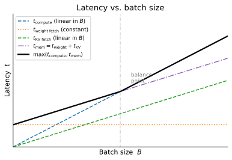
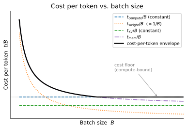
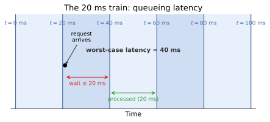
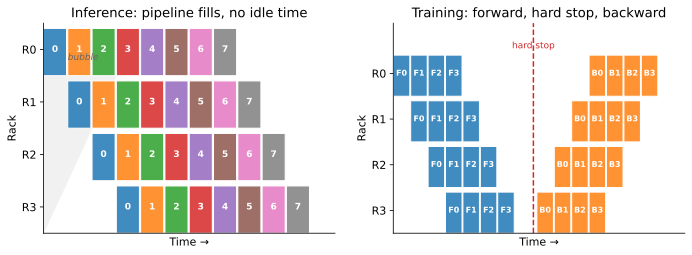
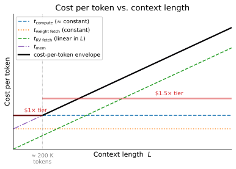
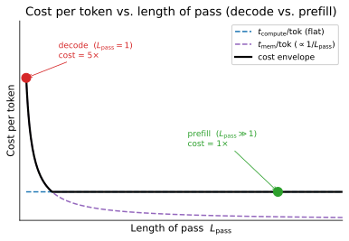
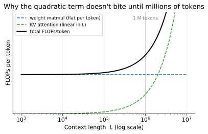

How Frontier LLMs Are Actually Trained and Served
In the April 29 episode of the Dwarkesh Podcast, Reiner Pope (CEO of chip startup MatX, previously at Google working on software efficiency, compilers, and TPU architecture) walks through how GPT-5, Claude, and Gemini are trained and served. The format is a blackboard lecture, running a little over two hours. Pope derives the economics and architecture of frontier LLM deployment from first principles, using only published API prices, public benchmark numbers, and the arithmetic of memory bandwidth versus compute.
The two hours are dense enough that a flat transcript is hard to skim, so I’ve built an enriched transcript at the bottom of this post: Dwarkesh’s raw gist sliced into 7 YouTube chapters and 59 fine-grained topic subsections (e.g., “solving for optimal batch size”, “why prefill is 5× cheaper than decode”, “reading off the 100× over-trained multiplier”), with hyperlinks added on first mention of every salient acronym, paper, model, product, and person. Pope’s blackboard charts have been redrawn as clean SVGs at the moments he sketches them on the board, and the equations he writes out — the roofline pair, the optimal-batch derivation, the equal-cost-shares heuristic, the 100× Chinchilla ratio, the bytes-per-token solve from API pricing — have been typeset as display math with notation glosses so each new variable is defined on first use. The subsection outline is in the right-hand sidebar; use it to jump directly to a specific derivation instead of scrolling.
One note upfront: Pope’s pacing at the blackboard — building a curve, erasing it, redrawing it to answer a follow-up — doesn’t fully translate to text. If you have two hours, watch the interview. With the charts and equations reproduced inline, the transcript below is self-contained for the math itself; use it as a reference index for specific derivations and click through to YouTube when you want to see Pope build them live.
YouTube chapters (jump to the enriched transcript below, or watch on YouTube):
- 0:00:00 — How batch size affects token cost and speed (YouTube)
- 0:31:59 — How MoE (mixture of experts) models are laid out across GPU racks (YouTube)
- 0:47:02 — How pipeline parallelism spreads model layers across racks (YouTube)
- 1:03:27 — Why Ilya said, “As we now know, pipelining is not wise.” (YouTube)
- 1:18:49 — Because of RL (reinforcement learning), models may be 100× over-trained beyond Chinchilla-optimal (YouTube)
- 1:32:52 — Deducing long context memory costs from API pricing (YouTube)
- 2:03:52 — Convergent evolution between neural nets and cryptography (YouTube)
My Notes
The headline claim of the lecture is that frontier architecture can be reverse-engineered from public API prices. API pricing has to cover real FLOPs (floating-point operations per second) and real HBM (high-bandwidth memory), so the per-token price floor constrains the model’s active-parameter count, its key-value (KV) cache layout, and its serving batch size. Labs treat these numbers as secrets, but Pope’s point is that the accounting identity between price and hardware forces the secret to leak through the invoice. The worked example is the jump to a higher price tier that Gemini 3.1 (and other providers) apply above 200K context: Pope solves for bytes-per-token at the compute/memory crossover and gets ~2KB per token, which is consistent with a reused-across-layers global context in the style Character AI has described. If the derivation holds, the “closed model” posture is more porous than the providers acknowledge.
Chinchilla derived compute-optimal data-to-parameter ratios for pretraining. RL (reinforcement learning) post-training consumes compute the Chinchilla [1] curve does not price, and if the RL phase dominates total training FLOPs the pretraining ratio stops being the right optimization target. Pope’s back-of-envelope: equalize pretraining cost, RL cost, and lifetime inference cost; plug in ~50M tokens/sec per model over a two-month lifetime; compare against ~100B active parameters. The pretraining token count comes out ~100× above what Chinchilla would recommend. This extends the concern Karpathy raised with Dwarkesh in October about RL “through a straw”: RL is sample-inefficient, and labs are now paying for that inefficiency with a compute budget that rivals the pretraining run.
“Pipelining [2] is not wise” pushes back on a decade of distributed-training folklore. Pipeline parallelism was the standard answer for fitting models that exceed one rack’s HBM. Pope’s argument for why it doesn’t actually help inference: splitting a model across P pipeline stages cuts the weight memory per rack by a factor of P, but the KV-cache memory per rack stays constant, because keeping every rack busy requires P microbatches in flight simultaneously. The per-rack improvement is zero. The alternative is either denser interconnect between racks (expensive, limited by physics) or MoE [3] (mixture of experts) partitioning that keeps each rack mostly self-contained (operationally harder, but bandwidth-kinder). The industry’s bet on MoE at the frontier is the choice this argument predicts. See also Sequential KV Cache Compression via Probabilistic Language Tries for a related line on why the KV cache is now the dominant memory cost of serving.
The real point of the crypto chapter is that cryptography and deep learning share the same primitives (differentiation, invertibility, high-dimensional mixing) and use them for opposite purposes. Both fields design large-parameter functions over high-dimensional spaces, and both are heavily constrained by the memory hierarchy; crypto hardware (AES, RSA, ECC accelerators) has driven chip design for thirty years, neural-network hardware for the last decade and a half. Pope draws three concrete bridges. Adversarial attacks on image classifiers are the avalanche property of a cipher, a property ciphers want (small input change, total output change) and neural networks don’t. Differential cryptanalysis works by differentiating a cipher with respect to its Boolean inputs, which is the same tool a neural net uses to train, applied here to break. And the Feistel construction that makes ciphers invertible was imported into neural networks as RevNets (2017) [4], where invertibility lets you rematerialize activations during the backward pass instead of caching them. That last trick is the inverse of the KV-cache bargain: RevNets trade compute for memory; the KV cache is the same dial turned the other way.
One lens runs through the whole lecture: the best way to understand the frontier is to price it out. That is a useful counterweight to the “just read the model cards” habit, but it also assumes architecture choices are driven primarily by economics rather than by model-quality considerations labs do not disclose. Both are true to different degrees, and the lecture does not try to resolve which dominates at each scale.
Transcript
What’s here is Dwarkesh’s raw gist transcript, reorganized into a reader-friendly form. The dialog itself is verbatim — no words added, cut, or reworded — but six layers of editorial structure have been added on top:
- Chapter + topic outline. The transcript is split into the 7 YouTube chapters, each linking to its timestamp, and each chapter is further sliced into fine-grained topic subsections (59 in total). The subsection titles are editorial: they summarize the specific question, derivation, or concept being discussed in that stretch of dialog, not a verbatim Dwarkesh quote. The full outline appears in the sidebar on the right — use it to jump to a specific question (“why is prefill 5× cheaper than decode?”, “where the 20 ms comes from”, “reading off the 100× over-trained multiplier”) instead of scrolling through two hours of dialog.
- Inline hyperlinks. On first mention of a salient acronym, concept, product, person, or company, a link has been added to the most authoritative source — the official product page, the person’s homepage, Wikipedia. Research papers are cited by number and collected in the References section at the end of the post.
- Bracketed acronym expansions. Where an acronym appears for the first time without being expanded in the original speech, its expansion is inserted in
[square brackets]to mark the expansion as editorial rather than something the speaker actually said (e.g.TPU [tensor processing unit]). - Reproduced blackboard charts. Each of Pope’s seven schematic plots — latency vs. batch size, cost-per-token vs. batch, the 20 ms train timeline, the pipeline bubble (inference and training panels), cost vs. context length, cost vs. length-of-pass, and FLOPs vs. context length — has been redrawn as a clean SVG and embedded at the moment in the dialog where Pope sketches it. The axes are unitless because the original blackboard curves are unitless: they illustrate shape, slope, and crossover points, not calibrated numbers.
- Typeset equations. Where Pope writes math on the board (“\(N\) over memory bandwidth equals \(B\) times \(N_\text{active}\) over FLOPs”), the corresponding line is rendered as MathJax display math right in the transcript, so the algebra is visible without having to translate Pope’s verbal walkthrough back into symbols. The equations are not extra commentary — they are what’s on Pope’s blackboard, transcribed into LaTeX.
- Editor’s notes in blue callout boxes serve two purposes. First, they flag claims that are verifiable and slightly off, heuristics Pope himself qualifies as ballpark, mid-derivation corrections that remain in the dialog, or unsourced second-hand numbers — and add auxiliary context for claims the dialog asserts but doesn’t explain (e.g. why the ~300 FLOPs/byte ratio has stayed stable across GPU generations). Second, after every equation block they gloss the notation: each new variable on the board is defined on first use, with concrete values where the dialog supplies them. The dialog stays verbatim; the callouts sit alongside so readers can gauge which numbers to trust, follow the derivations, and keep the symbols straight.
0:00:00 — How batch size affects token cost and speed
Fast Mode, Slow Mode, and what motivates the whole analysis
Dwarkesh Patel: Today, I’m interviewing Reiner Pope, who is the CEO of MatX, which is a new chip startup. Previously, he was doing TPU [tensor processing unit] architecture and many other things at Google. This is a very different format from my usual interviews. This is going to be a blackboard lecture. We’re going to get up in a second. We in fact built this whole new studio with specifically this format in mind, so it’s a pleasure to get to inaugurate it with you.
We’re going to be talking about model architecture, ML infra, and many other things. The reason I think it’s an important topic is because once you understand how training and inference work in a cluster, a lot of things—about why AI is the way it is, why AI architectures are the way they are, why API prices are the way they are, and fundamentally why AI progress is the way it is—start making sense. You need to understand the details to get there, and you need a blackboard to understand the details. Reiner, thank you so much for doing this.
Reiner Pope: Very happy to be here.
Dwarkesh Patel: Full disclosure, I am an angel investor in MatX, but that’s unrelated to this podcast. Reiner, to kick us off I’ll ask this question. We have a couple of companies like Claude and Codex and Cursor offering something like Fast Mode, where for 6x the price, they’ll stream you tokens at 2.5x the speed. Mechanically, I’m curious what’s going on here. Why is it the case that you can pay more to get faster latency?
Two, could you keep going? Could you pay 100x more and somehow get much faster speeds? Three, could you go the other way? Could you have something like Claude Code “Slow Mode”, where if you are willing to wait for minutes on end, you could get even cheaper prices? Maybe this will help motivate the analysis that you’ll be doing through the lecture.
Setting up roofline analysis: compute time and memory time
Reiner Pope: Great. To jump to the conclusion a little bit, the big effect is batch size. What we’re going to do now is quantify exactly what that looks like and what its implications are on latency and cost. There’s another effect, which you can call speculative decoding or multi-token prediction. We can maybe come back to that later, but the first thing that we’ll talk through is batch size.
What I’d like to introduce is the two principles of analysis. First, we’re going to look at a roofline analysis of how we run a transformer model on a cluster of chips. We’ll take a Blackwell NVL72 cluster, so a rack of 72 GPUs. The roofline analysis means we look at memory bandwidth and compute performance. The other side of that is that we’re going to look at just two simple factors of the model: the time to operate on the weights, and the time to operate on the context, the KV cache.
Let’s jump in. We’re going to try and estimate the time that it takes to run an inference of a certain shape. We’re not perfect here. We can’t exactly predict the time, so instead we’re going to approximate. We’re going to say that the time must be greater than or equal to a certain quantity. We’re going to consider two different aspects: the time it takes to do the memory fetches, and the time it takes to do the compute. It will turn out that this gives us very strong predictive power, even with a simple model.
One by one, what is the time that it takes to do the compute? There are really two things I need to do in the compute. I need to multiply by all of the active parameters, and then I need to do some work on the attention. Multiplying by all the active parameters, I have a certain batch size that I’m running, and I’ve got a number of active parameters in my model. Then I’m just going to divide this by the compute throughput, which is the FLOPs of the chip. This is a hardware concern.
This accounts for all of the compute time for all of the weight matrix multiplies. There’s a little caveat here. We’ve ignored the time to do any of the attention computation, but that in general will be quite small in comparison to this. So we’ll ignore this.
\[ t_\text{compute} = \frac{B \cdot N_\text{active}}{\text{FLOPs}} \]
Dwarkesh Patel: I’ll just interrupt from time to time to ask some very naive questions or to clarify some basic points. For the audience, you’re not serving one user at a time. The batch refers to the fact that you’re serving many different users at the same time, and that’s a whole batch.
Reiner Pope: I can motivate the batch at least a little bit. We will see exactly why batch is such a favorable optimization. What will turn out to be the case is that if you do not batch together many users, the cost and the economics you get can be a thousand times worse than if you do batch many users together. We’ll be able to see that quite explicitly.
Then, number of active parameters. If I look at, for example, a DeepSeek model, the DeepSeek V3 model has about 37 billion active parameters, and 700 billion total parameters. We’re focusing on just the ones that are active for a single AI token.
Editor’s note. DeepSeek V3 is usually reported as 671B total / 37B active (per DeepSeek’s paper and the Hugging Face model card); Pope’s “700B” is a loose round up.
We’re modeling compute performance. I’m going to keep writing equals, but in all of these cases, you can think of this time as being at least this much, and maybe there will be some terms we ignored.
On the memory side, what do we need to do with memory? We need to fetch all of the weights, so there is some time to fetch the total number of parameters, not just the active parameters. There’s weight fetch time, and then in addition, there’s a KV cache fetch time. This actually depends on batch size. For every element of the batch, we have to fetch an entire context length worth of tokens, and there’s a size per token, bytes for one token. This is a model parameter.
\[ t_\text{mem} = \underbrace{\frac{N_\text{total}}{\text{BW}_\text{mem}}}_\text{weight fetch} + \underbrace{\frac{B \cdot L_\text{ctx} \cdot \text{bytes/tok}}{\text{BW}_\text{mem}}}_\text{KV fetch} \]
The wallclock floor is then \(t \geq \max(t_\text{compute},\, t_\text{mem})\) — whichever resource is slower dictates the runtime.
Notation. \(B\) = batch size, the number of forward passes folded into a single GPU step. \(N_\text{active}\) = active parameters per token (37 B for DeepSeek V3). \(N_\text{total}\) = total weights stored on the chip (671 B for DeepSeek V3). \(\text{FLOPs}\) = the chip’s compute throughput in multiplies per second; \(\text{BW}_\text{mem}\) = HBM bandwidth in bytes per second. \(L_\text{ctx}\) = current context length in tokens; \(\text{bytes/tok}\) = the KV-cache footprint of one token (a model-architecture parameter, ~1–8 KB depending on attention design).
What the KV cache is
Dwarkesh Patel: Maybe just backing up, let’s explain what the KV cache is real quick.
Reiner Pope: When I do a forward pass… Let me draw how the autoregressive inference works. This is during decode. If I have a bunch of text tokens… I’m drawing a tensor because ultimately the tokens are represented as a tensor in some embedding dimension. In this direction, I have the sequence length.
The work of running a decode is that I have to run each token through a whole bunch of matrix multiplies over a bunch of different layers. In general, I’m going to have to do that work over all of these tokens. But one step of decode is to produce just this one additional token up here.
What I’m going to do there is run a full forward pass of multiplying by all of the weight matrices in the entire model. But then I’ve got this attention mechanism where this token is looking at all of the past tokens, and what is it looking at specifically? It is looking at some internal representation that the model has produced of the tokens, and we call that the KV cache. This process of this single token attending to all of the history of tokens is attention. It is mostly dominated by memory fetches rather than matrix multiplies.
So we’ve got the amount of memory that we’re fetching shown over here, and then this is of course just divided by the memory bandwidth, so the memory bytes per second. In fact, these equations here are enough for us to now draw some fit lines. The things that we’d like to look at are sensitivity to batch, and then also, which we’ll draw separately, to context length. We said that the big effect you can get is some trade-off in latency versus cost in batch size.
Let’s draw them out. I think there are just really two graphs that we want to draw. We’ll first draw batch size versus time here. When we look at the shape of this, we’ve got a maximum of the sum and then another term. Let’s look at these terms one by one and how they scale: the time for compute and memory, and how they show up.
Let’s first look at this compute time. This is just purely linear in batch size with no offset, so it is some curve like this. This is t compute. On the memory side, we’ve got some portion here that is just this constant in some base offset here, which is the weight fetch. Finally, we have this term here, which is the KV fetch, which is pretty linear in batch size, and so it looks like that. The sum of this plus this maxed with this… Let’s at least first draw the sum. The two memory times in conjunction end up looking on this curved slope like this. Then the overall maximum is—I’ll draw a little thicker here—the maximum of these two curves.
What does this mean? This is a latency plot. If I grow my batch size, initially I get some not very strong dependence on batch size, so there is some lower bound on latency here. This already partially answers the question. For a given hardware configuration—and we can talk about varying the hardware configuration—there is a lower bound on latency. It is simply that I need to read all of my total parameters from memory into the chips, and that takes a certain amount of time. If I use all of my memory bandwidth, I can’t do any better than that.
Latency vs. batch size: what the three curves look like

Dwarkesh Patel: It seems like the way you’ve drawn the slopes for compute time and how the KV grows—and what implication the KV has on memory time—
Reiner Pope: What if this were above or below?
Dwarkesh Patel: Yeah, is that necessarily the case? If this is always true, then as batch size grows compute always dominates KV, which suggests that if you have a big enough batch size, maybe memory is never an issue.
Reiner Pope: This is really sensitive to the context length, so I think we should come back and explore this. As you vary the context length, the KV fetch time will go up and up, and that will cause a transition from compute-limited to memory-limited.
Why the balance point (memory-bound = compute-bound) is a target
Dwarkesh Patel: Is there something especially significant about the slope being exactly the slope of the compute time?
Reiner Pope: Whenever we have balance points, it says that you’re getting it exactly right. For the particular context length where the slopes match, that says I am equally memory-bound and compute-bound, which is a really desirable place to be.
Editor’s note. The GPU rents two scarce resources per second — FLOPs and HBM bandwidth — and wallclock latency is max(t_compute, t_memory). Whichever is slower dictates the runtime; whichever is faster sits idle and is wasted rental. Equating them saturates both axes simultaneously, which is also where the cost-per-token curve bottoms out. The equality is the equation Reiner solves below to derive the B ≈ 300 × sparsity rule of thumb.
MFU inside vs. outside the Goldilocks zone
Dwarkesh Patel: This is a very simple algebra problem, but suppose the optimal is 100K context length, and you go to 200K context length. Does your MFU [model FLOPs utilization] go down to 50%? Does it have a humongous impact on MFU to be slightly outside of the optimal context length range, the Goldilocks zone?
Reiner Pope: That’s right. That is true as modeled here. There is a key point here that I’m modeling the memory fetch as linear in context length. That depends on model architecture. It is true for all of the model architectures with dense attention. Sparse attention actually scales much better than that.
Sparse attention and the √context improvement
Dwarkesh Patel: Got it. Is sparse attention [5] what everybody uses in practice?
Reiner Pope: I’m pretty excited about sparse attention. It’s hard to know what the labs are using. DeepSeek has published a sparse attention mechanism. I’ll just put a plug in that some of the DeepSeek papers that have published sparse attention end up putting a square root in this term.
So far, we’ve looked at the latency. It’s hard to read off cost from this. If I think about what cost means… To run this inference, I’m going to use the GPU for a certain number of seconds, like one millisecond or 20 milliseconds. I have to pay the rental time for that time. So it’s $2/hour per GPU or something like that.
That’s the cost of this inference, but how many tokens have I processed during that inference? That is the batch size. What we actually want to plot is the cost versus batch size, which is t over B versus batch size. This is the cost per token. We have to imagine dividing each of these three curves by B, so multiplying by this reciprocal. What we end up with there is… The compute curve was linear. We divide by B, and that makes it a constant here. This is t compute. The KV fetch was linear, and now it becomes a constant as well. Then the weight fetch was constant, and now we’ve divided by B, so it becomes this hyperbola.
Editor’s note. \(t\) is the per-inference latency (seconds of GPU time for one forward pass) and \(B\) is the batch size (tokens processed in that pass). At a flat $/GPU-hour rental rate, \(t/B\) is seconds per token, which is proportional to dollars per token — i.e. cost per token.
\[ \text{cost per token} \;\propto\; \frac{t}{B} \]
Again, we’re going to compute the max of the sum. The sum of these two terms shifts the hyperbola up. The sum of the KV fetch and the weight fetch gives us a higher hyperbola that’s like this. Then we’re going to take the max with the compute here. We end up with this being the overall shape that we care about.
Again, we see some limiting behavior. The cost initially starts very high at a batch size of one. It almost goes to infinity because we’ve got so many weight fetches that are not amortized over a large batch size. But as we increase the batch size, the weight fetches become amortized over so many different batch elements that their cost grows very small, and eventually the compute time ends up driving the cost. So there is a limiting lower bound on cost, which is this line here.
Cost per token: dividing through by batch size

Dwarkesh Patel: So Claude Code Slow or Codex Slow or whatever would just live on this line. It wouldn’t help much because you’re not able to amortize the KV values over a much bigger batch.
Reiner Pope: They’re unique per batch. The compute is also unique per batch. So what is the minimum work you can do per batch after amortizing everything else away?
Editor’s note. “This line” is the flat floor of the cost-per-token curve from the previous section. Dwarkesh is pointing out that cheap/slow agentic modes like Claude Code Slow and Codex Slow are already sitting on that floor — bigger batches can’t help, because each request’s KV cache is unique (its own conversation, its own context) and has to be fetched per-request; only weight fetch amortizes across a batch. Reiner agrees and reframes the remaining question: what’s the irreducible per-request work?
Solving for optimal batch size: B ≈ 300 × sparsity
Dwarkesh Patel: This point where you are no longer memory bandwidth bound, practically how big a batch do you need? How big are the batches practically for frontier models?
Reiner Pope: You can just solve for that. It’s not even particularly sensitive to model architecture. Let’s go ahead and do that.
What we’re talking about is when the memory time is equal to the compute time. That’s what that question is. Because we’re focused on what the batch size is—and really there’s a question of when the weights are amortized over the multiplies—I’m going to focus on comparing the weight fetch time to the weight multiply time. I’m going to disregard the KV fetch term just to simplify the analysis so we can get a clean answer out. We’re going to equate this portion with these two times.
Writing that out, we get N, number of total parameters, over memory bandwidth, is equal to batch size times number of active parameters divided by the compute performance. Looking over here, everything on the top are model parameters. Everything on the bottom are hardware parameters. It turns out to be nice to rearrange them such that we have the hardware parameters on one side.
\[ \frac{N_\text{total}}{\text{BW}_\text{mem}} \;=\; \frac{B \cdot N_\text{active}}{\text{FLOPs}} \quad\Longleftrightarrow\quad \frac{\text{FLOPs}}{\text{BW}_\text{mem}} \;=\; B \cdot \frac{N_\text{active}}{N_\text{total}} \]
Notation. \(\text{FLOPs}/\text{BW}_\text{mem}\) is the chip’s arithmetic intensity — multiplies-per-byte the chip can sustain. The right-hand side is dimensionless; the left-hand side becomes dimensionless once you note one FP4 multiply consumes half a byte of weight. The crossover constant is ~300 on most modern GPUs (TPU v5e ~240).
This is equivalent to FLOPs over memory bandwidth being equal to batch size times number of active parameters, divided by the number of total parameters. This hardware parameter ends up being a dimensionless constant. If you look in terms of FLOPs… What are the dimensions of this? This is multiplies per second. This is bytes per second. So that’s not quite dimensionless. But what you do is you say, how many FP4 multiplies per second times the fact that each FP4 is half a byte. I can actually make this end up being dimensionless. On most GPUs, this ends up being somewhere around 300.
Dwarkesh Patel: Has that ratio changed over time as we’ve gone from model generation to model generation, where the FLOPs keep increasing?
Reiner Pope: This is a hardware parameter. To what extent has the hardware changed? From A100 to H100 to B100, the FLOPs have increased substantially, the memory bandwidth has also increased substantially, and it has remained reasonably stable.
Editor’s note. The ~300 FLOPs/byte critical intensity is a well-documented constant, not a personal heuristic. Pope himself co-authored the canonical writeup [6]. The companion Google DeepMind systems-scaling reference [7] pegs it at 240 FLOPs/byte for TPU v5e and “closer to 300” for GPUs. The ratio has held across generations because HBM bandwidth and compute FLOPs co-scale on the same process cadence, and Nvidia tunes HBM provisioning so the crossover sits near typical serving batch sizes.
Editor’s note. A deeper question is whether ~300 is structural or incidental. The hard floor is energy: moving a byte between HBM and the compute die costs ~30-100 picojoules (pJ), while a single low-precision multiply-accumulate (MAC) costs a fraction of a pJ [8]. Since accelerators are power-limited (cooling caps package draw near 1 kW), the energy-optimal operating point balances compute power against memory I/O power, which forces workload intensity to sit near the inverse of the per-op energy ratio — a few hundred FLOPs/byte. Interposer signaling energy resists process scaling (it’s set by bump capacitance and voltage swing, not transistor size), so the ratio resists generation-to-generation shrinks. The floor would shift if weights were served from in-package static random-access memory (SRAM) instead of HBM (the Cerebras / Groq / MatX thesis), where per-byte energy drops to ~1 pJ. In Reiner’s framework, a 30-100× drop in per-byte energy translates into a 30-100× drop in the critical FLOPs/byte ratio, so the B > 300 × sparsity crossover moves closer to B > ~10 × sparsity and the cost-per-token curve reaches its asymptotic floor at roughly an order of magnitude smaller batch — making single-user and agentic decode cheap to serve without the provider needing to batch aggressively.
We can express this one as well. This is a sparsity parameter. I might even phrase this slightly differently. Let’s solve for batch size in total. Moving this back over to the other side, we end up with batch size needs to be bigger than approximately 300 times sparsity. For example, in DeepSeek I activate 32 out of 256 experts, so this would be 8 for DeepSeek.
\[ B \;\gtrsim\; 300 \times \text{sparsity}, \qquad \text{sparsity} = \frac{N_\text{total}}{N_\text{active}} \]
Notation. “Sparsity” here is the inverse activation ratio: total weights ÷ active weights per token. DeepSeek V3 activates 8 of 256 experts plus a shared expert, giving sparsity ≈ 8 and a target batch ≈ 2,400 sequences.
This actually gives you a ballpark which is remarkably accurate to practice. Generally, people will go a little bit larger than this. They don’t really want to be exactly at the balance point because real-world efficiencies aren’t as good as a roofline analysis would say. But take this and maybe double or triple it.
What “batch size 2,000” actually means (sequences, not tokens)
Dwarkesh Patel: Okay, so it’s two to three thousand tokens per batch. But then if you included the KV cache, the implication would be that the optimal batch size…
Reiner Pope: Should grow larger. We solved for the equivalence between when compute time is equal to memory time. If I add in something that consumes more memory bandwidth, then I have less available for the weight loads. I need to grow the memory bandwidth more, and therefore the batch size more.
Dwarkesh Patel: This seems incredibly small. This would be less than one sequence, right?
Reiner Pope: Keep in mind that I’m talking about the number of tokens that I’m generating one more token for. It’s actually 2,000 unique sequences.
Dwarkesh Patel: Got it. We’re just talking about a single forward pass on these sequences. You think of the batch as the number of sequences.
Reiner Pope: That’s right.
The “20-millisecond train”: queueing latency

Dwarkesh Patel: If you’ve got a frontier model and you are actually doing inference, surely they must have more than 2,000 concurrent users. Is there any added latency from the fact that you need to have the whole batch fill up? Or if you have a reasonable amount of users, is it so unlikely that it would take you 100 milliseconds to fill up the next 2,000 slots?
Reiner Pope: The way to think about this is: when does the train depart, as a model? Let’s say I’ve picked a batch size that I’m going to run at. By the way, this intersection point is the same intersection point here. I pick this batch size, and I know that it’s going to take, for example, 20 milliseconds, which is a common place this ends up landing.
This is a timeline of what is running on the GPU. It’s going to start a new batch every 20 milliseconds regardless. You can think of this as a schedule for the train. A new train departs every 20 milliseconds. Any passengers who are ready board the train. If the train is full, they wait until the next train. If the train is not full, the train is going to go anyway.
In terms of what that means for queuing latency, the worst case is that a request arrives just after the train departed. It has to wait for the next train, so that’s up to 20 milliseconds, and then it has to wait for that train to complete. So the worst-case latency is 40 milliseconds.
Where 20 ms comes from: HBM drain time
Dwarkesh Patel: How is the 20 milliseconds derived?
Reiner Pope: It’s a rule of thumb, but where it comes from is not fully explained yet. So far we’ve focused on memory bandwidth and compute time. When we look at memory, the other consideration is that we want to use all of the memory capacity we have. Generally, we’re going to use all of that memory capacity to store the weights or the KVs. In the time of doing a forward pass, we want to read all of the memory capacity into the chip. That is capacity divided by bandwidth. That tends to be 20 milliseconds on many different generations of HBM [high-bandwidth memory].
\[ t_\text{drain} \;=\; \frac{\text{HBM capacity}}{\text{HBM bandwidth}} \;\approx\; 20\ \text{ms} \]
Dwarkesh Patel: The units make sense. You would have a byte divided by bytes per second.
Reiner Pope: For example, on the Rubin generation, it is something like 288 gigabytes divided by 20 terabytes per second. This comes out to about 15 milliseconds.
\[ \frac{288\ \text{GB}}{20\ \text{TB/s}} \;\approx\; 15\ \text{ms} \]
Notation. \(t_\text{drain}\) = the time to read every byte of HBM on a single GPU at full bandwidth. Both the capacity and the bandwidth scale together with the chip, so the ratio has held in the 15–20 ms range across HBM2 / HBM3 / HBM4 generations. This is what sets the natural batch-step duration (“the 20 ms train”).
Editor’s note. These are Nvidia’s published Rubin targets; Rubin is slated for Q3 2026 and final shipping specs may still shift.
Dwarkesh Patel: Let me make sure I understand what this is saying. I understand the unit analysis. What it’s saying is we can evacuate and replace the HBM in this amount of time. So we don’t want to be in a situation where the HBM is not big enough that we’re not actually able to write everything we want to it or take everything out of it. Or we don’t want to be in a situation where our ability to write back and forth is so small compared…
Reiner Pope: There are sort of two scenarios. Why don’t we pick a latency that is bigger than 15 milliseconds? If I think about what that means, it means I actually have time to read the HBM twice. By the way, most HBM accesses are reads, not writes. It’s almost all reads because the weight matrices are read-only, and almost all of the KV cache accesses are reads. In around 30 milliseconds, I can read all of HBM twice, but what’s the point of that? I don’t want to read the weight matrices twice. I don’t want to read the KVs twice.
System throughput: tokens per second at global scale
Dwarkesh Patel: Makes a ton of sense. A couple of quick questions. If it is the case that the optimal batch size is something like 2,000, it’s totally dependent on the sparsity, not dependent on the model size or anything.
Reiner Pope: Sparsity shows up in model size, but beyond that, it only depends on sparsity, not on scale.
Dwarkesh Patel: That’s a very interesting result. One question is how much of a push towards centralization is it that you would have these economies of scale from inference for batching? But it seems like it’s not that big a deal. Is 2,000 users at the same time a lot? It doesn’t seem like a lot.
Reiner Pope: We can do a bit of analysis on this. You can think of it in terms of number of users, but a more productive way to think of it is in terms of tokens per second. What does this batch size mean in terms of tokens per second of the system?
Tokens per second is going to be equal to the batch size. We run a batch of tokens, and we do that every time interval, which is equal to the 15-millisecond or 20-millisecond number. This ends up being batch size times about 60, so 64 x B. This ends up being around 2,000 x 64, so 128,000 tokens per second. This is in more digestible units.
\[ \text{tokens/s} \;=\; \frac{B}{t_\text{drain}} \;\approx\; 64\,B \;\approx\; 128{,}000\ \text{tok/s at } B=2000 \]
Notation. Tokens/s is the system throughput a single rack delivers: each “20 ms train” carries one batch’s worth of new tokens, so the rate is batch ÷ drain time. The 64 prefactor is just \(1 / 0.0156\,\text{s}\). For comparison: hyperscale providers reportedly serve hundreds of millions of tokens/s globally, so 128 K tok/s is roughly 1/1000 of that — i.e. one rack covers ~0.1% of global traffic.
It’s hard to reason about concurrent users, but what is the global traffic for a system? When you look at some of the announcements, sometimes the API providers will brag about how much traffic they have. The numbers I remember from some announcements of Gemini last year were in the hundreds of millions of tokens per second worldwide. This is one-thousandth of that.
Can sparsity keep scaling? Quality vs. compute trade-off
Dwarkesh Patel: Gemini is big. One-thousandth of Gemini is a lot. To actually be competitive at scale, you need to be able to serve at least one-thousandth of Gemini. That’s interesting.
The more sparsity you have, the less compute you need. It does seem that as batch sizes get bigger, compute ends up being the bottleneck, according to this analysis. Then the question is, how far can you take sparsity? As the sparsity ratio increases, as you have fewer active parameters relative to total parameters, how much is the performance of the model degrading? Is it degrading faster than you’re saving compute by increasing the sparsity factor?
Reiner Pope: You mean the quality of the model, rather than the speed of the model. Unfortunately, we’re not able to answer that analytically. That is an empirical question of model quality. The best I can do is pull up a paper and answer that empirically.
Dwarkesh Patel: Should we pull up the paper now?
Reiner Pope: This paper is “Unified Scaling Laws for Routed Language Models” [9]. It’s a somewhat old paper by this stage, but one of the things they looked at is if I keep increasing sparsity, what is the model quality impact? This answer is very sensitive to the actual choice of mixture of experts. Mixture of experts [3] has been around for a really long time, maybe even back in 2017, but the techniques have changed a lot. DeepSeek’s mixture of experts was a big change in how it worked. There have been older papers, like “GShard” [10] and “Switch Transformer” [11]. The actual empirical results are going to depend on all of that.
![][image1]
On one of the older techniques shown here, you can see if I hold constant the number of active parameters at a certain size, and then I increase the sparsity, which they call expert count, the quality keeps increasing. If you imagine drawing a horizontal line from 1.3B dense across, you end up seeing that, in this case, the 64-expert 370-million activated parameter model is as good as a dense 1.3-billion model.
Dwarkesh Patel: So in some sense, it’s actually not amazing returns where you need to increase total parameters a hundredfold to get the equivalent of 10x as many active parameters.
Reiner Pope: Actually even more so. It’s a huge increase in parameter count for a modest increase in efficiency.
Dwarkesh Patel: So in this case, actually it’s 4x?
Reiner Pope: 64x for 4x.
Editor’s note. In plain terms: going from a 1-expert to a 64-expert MoE at the same active-parameter count costs you 64× the HBM — you need that many more GPUs to hold the weights, and every forward pass streams all of them from memory. What you get back is the quality of a dense model only 4× larger (the 370 M-active MoE performs like a 1.3 B dense model). The figure is from one routing technique (circa 2022) in the paper Pope cites; more recent fine-grained-expert designs like DeepSeekMoE and Qwen MoE achieve better sparsity-to-quality returns, so this ratio is a floor, not a ceiling.
Dwarkesh Patel: So while it is true that you get this benefit of being able to economize on your compute time if you increase sparsity, naively it would seem like a trade-off worth making. But if you’re decreasing this by 2x and then having this go up by 8x every time you double sparsity…
Reiner Pope: Is that good or bad, actually? Even from a memory point of view… Keep in mind you are doubling this portion of the memory fetches, which is amortized by batch. So just keep running a larger batch size. From the point of view of the analysis we’ve done here, this is a pure win. Keep doing it until you run out of available users, basically.
There’s this equivalence where if I have a lot of users, I can go to a much sparser model. From that point of view, it’s a reasonable trade-off. The other trade-off that shows up here is that it also consumes memory capacity. We’ve only reasoned about memory bandwidth here, but it also consumes memory capacity.
Dwarkesh Patel: I see. Let me make sure I understood. You’re saying we want to spend less time computing, therefore we do more sparsity. To make that work, we need bigger batch sizes. Which means we need more memory capacity to have more sparsity.
0:31:59 — How MoE models are laid out across GPU racks
Laying an MoE layer on a GPU rack with expert parallelism
Reiner Pope: Maybe this would be a good point to talk about how a mixture of experts layer is typically laid out on a rack of GPUs.
Dwarkesh Patel: Cool. Makes sense. Where were we?
Reiner Pope: Sparse mixture of experts. Maybe how we lay that out on a GPU.
Let’s zoom in on the mixture of experts layer first and draw what that looks like. Typically, we’ll have some kind of a router layer, which is making the decision of where we route the tokens to. We get tokens coming in here, they go through a router layer, and then we have a bunch of different experts. I’ll draw a few more to line some up.
The router will make a decision of which experts it’s going to route to, and it will be a small fraction of them, maybe 1 in 32. Maybe it will make a decision to route to this one, maybe this one, and maybe this one. Each expert itself is a normal MLP [multi-layer perceptron]. It has an up projection and then a down projection with a nonlinearity in between.
Editor’s note. Modern MoE routes each token to multiple experts — top-k with k > 1. Mixtral uses top-2 of 8; DeepSeek-V3 uses top-8 of 256 plus a shared expert that always fires. Pope’s “1 in 32” is the fraction of experts active, not the literal count, and his “maybe this one, maybe this one, and maybe this one” hints at the top-k picture. The “32 out of 256” DeepSeek figure he cites earlier in the transcript is this in practice. Activating multiple fine-grained experts per token and weighted-summing their outputs is part of why newer MoE designs beat the Switch-Transformer-era 64× for 4× ratio.
Then finally, we do the inverse operation. Where we were broadcasting things out here, we’re going to bring them back in and sum them up. Bringing them in like this. Then finally, we have our residual connections. The token is also passed through here, and it gets added to the result of the MoE layer. This is a normal MoE layer.
What I want to talk through is how this is mapped to a GPU rack and what this means for communication, because I think this will start to show some of the limits of how sparse we can go. The standard practice here, and it is the best solution, is to use expert parallelism [10]. That means different experts go on different GPUs. If we take something like a DeepSeek model, they have 256 experts. Let’s say we want to run that on a Blackwell rack. There are 72 GPUs.
We have a divisibility problem. This is not a power of two. We’ll just simplify and say we’re only going to use 64 of them. Just ignore the other eight. It’s not a big deal. So we have four experts per GPU. Very simple. For the sake of the diagram, actually let’s just say we have two experts per GPU. We end up just putting these GPU boundaries. Every pair of experts is on its own GPU.
Then we can look at the communication cost. We had some tokens stored centrally here. They get routed to all of these experts, and there is some communication cost paid here. There’s the same communication cost paid on the output. The hope is that this does not become communication limited.
Now what is the traffic pattern here? The traffic pattern here is that any GPU will be talking to any other GPU, depending on the decisions made by the model. This is an all-to-all traffic pattern.
Router topology and all-to-all traffic within a rack
Dwarkesh Patel: When you say any GPU in the pre-tense, the router is more than one GPU?
Reiner Pope: I drew this as one router. In reality, you would actually have many copies of the router, and you would have as many routers as GPUs, in fact.
Dwarkesh Patel: As the incoming traffic.
Reiner Pope: Yeah. These are 64 GPUs and these are 64 GPUs. It’s actually the same GPUs, we just draw them as separate because they’re serving different purposes. So at this point, any GPU can be sending to any other GPU.
This all-to-all pattern of communication that shows up and how the Blackwell racks are configured is a perfect fit for the communication pattern that the MoE actually wants to do. However, if you think maybe one rack is too slow and I want to do two racks, then I have this challenge that maybe I’ve got some sort of rack boundary drawn outside here like this, and I no longer have all-to-all communication between all the GPUs in two racks. The rack-to-rack communication ends up being a substantial bottleneck.
The fundamental thing here is that one rack bounds the size of an expert layer you can do. This has been part of what’s been driving towards larger and larger interconnect domains.
What a rack actually is: NVLink vs. the scale-out network
Dwarkesh Patel: Before we continue, it may be worth you explaining what exactly a rack is. The differences in bandwidth between a rack and within a rack, and the all-to-all versus not all-to-all nature of communication within versus outside.
Reiner Pope: This is a place where it starts to be very different between Nvidia, for example, and Google, and then others, including us. Generally, a rack is a physical structure. It’s a few meters tall, a meter or two wide, depending on configuration, and it stores some number of GPUs or XPUs, which is typically about 64.
What constrains it being a certain size is power delivery, weight, and cooling ability. It ends up being about this size in many cases because of these physical constraints. When I deploy a data center, a data center may have thousands of these racks. I’ve got one of these tall racks, it’s got a bunch of GPUs in it, and so on. And then I put another rack next to it.
Dwarkesh Patel: You make it sound so easy.
Reiner Pope: Right. I just drop them in. In Nvidia’s case, the communication topology… They actually put the GPUs on the outside of the rack, and then they put these switches on the inside of the rack. What this ends up being is that there’s a set of switches in here. These are the NV switches. Then they run a bunch of cables. Every single GPU has cables going to the switches in the middle. The switches have connections to all the GPUs. All of the GPUs can talk to all the other GPUs in just two hops: going to the switch, going to the other GPU.
Now, when I want to leave the rack, I end up going via a different path. The GPUs also have a much slower connectivity, which is typically about eight times slower. The green that I drew here in the GPU cases is the NVLink. More generally, it’s called the scale-up network. You will typically also have a scale-out network, which allows you to connect to some data center switch. All of the GPUs will have some connectivity up to some data center switch somewhere. This is the scale-out, and it tends to be about 8x slower in bandwidth.
The challenge, if you want to lay out a mixture of experts layer across two racks, is that half of the GPUs here are going to be wanting to talk to the GPUs here. On average, when I look at where the tokens on these GPUs want to go, half of the tokens want to go inside the rack. That’s great. They can use the fast scale-up network. But half the tokens are going to want to leave the rack and go to the other rack, and that’s not as good. They need to use a much slower network, and so that becomes the bottleneck on the all-to-all pattern.
A different choice would be, why don’t I have a big switch here and connect everything to a much bigger switch that actually combines the two racks together? There are many ideas in this direction, but in general, the reason you have this hierarchy of switches rather than one big switch is to manage the cabling congestion. You just need to run a large number of cables.
Why not just scale up to a thousand or million chips?
Dwarkesh Patel: Sorry, is that question you just asked basically, why isn’t it a bigger scale-up?
Reiner Pope: Exactly. Why not just have a million chips in scale-up or a thousand chips?
Hopper → Blackwell → Rubin: what unlocks bigger scale-up domains
Dwarkesh Patel: What has changed that has allowed Nvidia to go from Hopper, which was 8, then Blackwell is 72, and now Rubin will be… is it 500 something?
Reiner Pope: Yeah, 500 and something.
Editor’s note. The “500+” Rubin number is Nvidia’s NVL576 roadmap, which counts dies rather than packages — a distinction Jensen acknowledged on stage. The package-level scale-up domain is roughly 144–288 depending on which slide Nvidia is using.
Dwarkesh Patel: What has allowed that to happen?
Reiner Pope: From Hopper to Blackwell is mostly just the decision to switch from trays as the form factor to switching to racks as the form factor. That’s a product decision. There wasn’t a substantial technical barrier there.
Switching from 64 to 500 or so, there’s a bit of Jensen math there, but there is at least a genuine 4x increase, which is coming from a much more complicated and difficult rack design. That is actually a new physical design to run more cables.
Why cable density limits rack size
Dwarkesh Patel: The cable complication is just the cost of figuring out which cable hops to which, or which signal goes from what to what?
Reiner Pope: Let’s zoom in on this and look at the wire density. I’ll draw this diagram just once more so we have a bit of a cleaner and larger version to work with.
Let’s say I have some switches in the middle. Initially, I’m going to start with just two GPUs on each side or two trays of GPUs on each side. Let’s say maybe each tray wants to have two cables coming out of it. I physically run vertical cables that look like this running out to the switches. Now if I want to double the number of GPUs in a rack, I need to run literally twice the density of cables. I need to run these as well.
Dwarkesh Patel: Extremely naive question. But if you look at a physical data center, it seems like there’s a lot of space within a rack. I don’t know. The cables are really big and…
Reiner Pope: There is space outside the rack. Inside the rack… As they become more optimized, these racks are very tight. There’s connector density going from the tray into the rack and the rack’s backplane, and the backplane itself has a really high density. There are other physical constraints including the bend radius of cables. You don’t want to snap them and so on.
Dwarkesh Patel: Okay, so it’s literally the physical space to put a cable that’s constraining it. I had no idea. Interesting. That seems surprising. The rack is so big and we can’t just stuff more cables in there.
Reiner Pope: Rack design is not my expertise, but when I talk to folks on what constraints they’re up against, it’s a combination of things. What are the big physical things you’re optimizing for? Space, weight of the rack. It’s actually really heavy, so you need enough metal to not sag and fall. But then you add more metal, and it’s heavier. Then power and cooling. All of those are competing. Modern racks are pushing all of those to very extreme physical limits.
Why trillion-parameter models had to wait for Blackwell
Dwarkesh Patel: When was GPT-4 released again? Was it 2022 or 2023?
Reiner Pope: 2023.
Dwarkesh Patel: Okay. And it was rumored to be over one trillion parameters. It seems like only now, within the last six months, have models been getting released that have significantly more parameters than the model released three years ago, when supposedly there should have been this scaling in the meantime.
Is the reason that we were just waiting for racks with enough memory to hold a five-trillion parameter model, along with its KV cache for enough users for a lot of sequences? Or if you’re doing RL, a similar consideration of actually holding the KV cache for the batch of problems you’re trying to solve.
If you look at Hopper, you had eight Hoppers, and I think that’s 640 gigabytes as of 2022. With Blackwell finally, which was deployed in…?
Reiner Pope: Very recently. Maybe last year.
Dwarkesh Patel: Last year. You finally have a scale-up on the order of 10-20 terabytes, which is enough for a 5T model plus KV cache.
Reiner Pope: Deploying in larger scale-up domains is a huge unlock. I’ve drawn here the Nvidia Blackwell deployment. The Google deployment has actually had very large scale-up domains for a long time.
Dwarkesh Patel: That also explains why Gemini seemed to be ahead. It just seems like Gemini has had successful pre-training for longer than some of the other labs.
Reiner Pope: Not having been there at the time, I’m not sure how much is coming from successfully deploying higher sparsity ratios, which it could be. It could also be a whole bunch of actual modeling things, specifically how you do the mixture of experts. We’ve seen the DeepSeek mixture of experts activate more experts, but finer-grained experts. That was a big innovation. I’m sure there are many other innovations on the model architecture as well as on the training data.
It’s hard to disentangle all of them, but what shows up in terms of the limits of what you can do is that the active parameters, as we saw, are limited by the compute cost, and the total parameters are limited by the scale-up size.
0:47:02 — How pipeline parallelism spreads model layers across racks
All-to-all vs. pipeline: when is it safe to span racks?
Dwarkesh Patel: When you’re operating within a single scale-up domain, is that a consideration specifically for either forward or backward, or specifically for prefill versus decode? Or is it preferred to always be within a scale-up whatever kind of workload you have, whether you’re doing a pre-training run, RL generation, or inference for users?
Reiner Pope: Really interesting. To answer that question, we’re going to need to talk about the communication patterns. We’ve talked about the mixture of experts communication pattern. That is this all-to-all. All-to-all very strongly favors full connectivity, which is what we’ve just shown here, and it favors being within one rack.
There are other kinds of parallelism besides expert parallelism, which we just showed here. In the literature is tensor parallelism [12]. With the trend towards smaller experts, this has become much less relevant, so we can ignore that. But the other two things we have available are data parallelism [13] and pipeline parallelism. They can be a much better fit for using multiple racks.
Let’s focus on pipeline parallelism specifically. This is one layer of MoE. I’m going to have a hundred more layers up above. I could decide at this point, for example, to move to a different rack, change rack. Now, is that going to become a communication bottleneck? We can actually solve for when this becomes a communication bottleneck. Before we do that algebraically, let’s visualize it out and sketch the path. We’re going to have another MoE layer, and another MoE layer here, and so on.
Let’s say I change rack here, and then some number of layers later, I change rack here as well. The methodology we’re going to use to determine whether we have a communication bottleneck at the point where we change rack is we’re going to compare the scale-out bandwidth requirements to the scale-up bandwidth requirements. Let’s write this. The hint is going to be that there’s a lot more sends here. We’re sending many things here, whereas we’re only sending one thing here, and we’re also maybe doing it many times. That’s what makes the difference.
Algebra of scale-up bandwidth vs. scale-out bandwidth
Dwarkesh Patel: Can I try to guess? Just out of curiosity, to see if I’m actually understanding, it seems like you’re sending batch size into the rack.
Reiner Pope: In here? Yes.
Dwarkesh Patel: But the communication within the rack is batch size times number of GPUs.
Reiner Pope: Number of activated GPUs. I don’t send to this GPU at all. There’s an explosion from 1-3x larger here in this diagram. The key thing is that I didn’t even need to send to this GPU at all, and so that’s a big saving.
We’re going to talk through to what extent scale-up is a bottleneck over scale-out. We will directly jump to the ratio of the time spent on scale-up over the time spent on scale-out. This is the quantity we’re talking about.
The first consideration is that scale-up is 8x faster than scale-out generally. At a baseline, if the bandwidths were the same, we would have this 1/8, which is coming from bandwidth. But then we have some amount of expansion in how much data we’re sending. If one token comes in here, then this one token gets routed to, in the DeepSeek case maybe 32 experts or 16 experts. It gets routed to some number of experts. So this is the number of activated experts. This same thing applies on multiple different layers, so maybe I’m going to run two layers. There’s also multiple times the number of layers per stage.
Dwarkesh Patel: Don’t you need to multiply the whole thing by two for the all-to-all?
Reiner Pope: For the up and down. Yes, there’s a factor of two. Thank you.
What we would like is for the scale-up time to be greater than the scale-out time, because the scale-up time is the more important and precious resource. We would like this number to be greater than or equal to one. This really doesn’t seem hard. There’s just a factor of 8 that we need to overcome. So we need the product of these three things to be bigger than 8. Typically we have a fairly large number of activated experts. It could be 8 by itself. Then we can increase the number of layers per stage a lot until we satisfy this.
\[ \frac{t_\text{scale-up}}{t_\text{scale-out}} \;=\; \underbrace{\tfrac{1}{8}}_\text{bandwidth ratio} \cdot \underbrace{n_\text{activated experts}}_\text{routing fan-out} \cdot \underbrace{2}_\text{up + down} \cdot \underbrace{n_\text{layers/stage}}_\text{reuse per hop} \;\geq\; 1 \]
Notation. The 1/8 is the ratio of cross-rack bandwidth (InfiniBand/Ethernet, the “scale-out” network) to within-rack bandwidth (NVLink/NVSwitch, the “scale-up” domain) — scale-up is roughly 8× faster per Blackwell generation. \(n_\text{activated experts}\) is the routing fan-out (DeepSeek V3 routes each token to 8 of 256 experts). The factor 2 covers the up-projection routing plus the down-projection sum-back. \(n_\text{layers/stage}\) is how many MoE layers run on one rack before the activations cross the network to the next rack — increasing it amortizes the cross-rack hop.
What this ends up looking like is that I can have an entire pipeline of racks where one rack does one layer, and then I move on to the next rack and do another layer, and then I move on to the next rack and do another layer.
Why the best parallelism cuts match the model architecture
Dwarkesh Patel: It’s interesting to me that the best parallelism strategy in practice ends up being one which physically resembles the actual architecture. It’s not some galaxy brain thing. It’s like, “Oh, we have experts, we’re going to put them on different GPUs, or we have different layers, we’re just going to put them on different racks.” I feel that’s interesting.
Reiner Pope: The cutting matches the model architecture.
Dwarkesh Patel: Exactly. It could have been something wackier with tensor parallelism and whatever.
Reiner Pope: The galaxy brain way to think of it is, what are all the different dimensions in which a model is scaled up? It is scaled up by layers, it is scaled up by the model dimension, it is scaled up by the DFF dimension, it is scaled up by the number of experts. Every single one of those numbers you can choose to cut along. If those numbers are big enough, it eventually becomes profitable to cut along there. We have selected two of them. The other two, in the way models are typically sized, are not profitable.
Ilya’s “pipelining is not wise” and Kimi’s cross-layer residuals
Dwarkesh Patel: So there’s a talk by Ilya where he says, “Today we know not to do pipeline parallelism.” And Horace He gave my friends and me… I hate that it sounds like a Dr. Seuss quote. But he gave us a lecture on these different kinds of parallelisms. He said the problem with pipeline parallelism is that, other than the bubbles, it creates these architectural constraints. Kimi, for example, has these residuals where attention attends to layers a few back, so it becomes hard to implement in this way.
Reiner Pope: I guess we didn’t fully articulate even what is the benefit that we’re getting from pipelining. These complexities are real. Pipelining is a massive hassle, but it does give you some benefits. You can then decide whether those benefits are worth the costs. It has some benefits in inference, maybe bigger benefits in training. In inference, what are we saving on? Are we saving on memory time or compute time? Not really. We’re just moving the memory time from one chip to another chip, or one rack to a different rack. There’s no actual benefit in runtime.
However, what we are saving on is memory capacity. If we think that the memory in a rack is a bottleneck, then there’s a constraint on how fast we can go. Pipelining allows us to massively reduce that bottleneck.
What the pipeline bubble is: microbatching in inference
Dwarkesh Patel: The opposite connotation to this… Before this interview, I was chatting with Axel, who’s a GPU performance engineer at Jane Street. He was explaining that to do pipelining, you have to do micro-batches rather than full batches. If you do micro-batches, then you’re by definition not able to amortize loading the weights across all the users or all the sequences. The positive connotation of that is you don’t have to use as much memory. The negative connotation is that we can’t amortize loading the weights across all those users. Maybe it’s worth explaining why you have to do micro-batches.
Reiner Pope: Shall we draw the pipeline bubble? What is this micro-batching that shows up in pipeline parallelism?
I’ll focus on inference first. It’s a slightly simpler problem. I’m going to draw time, and then which rack we’re on. The idea is that maybe I’ll have four racks. I’ve got an inference that is going to step through these four racks in some time like this. This is inference number zero. It runs at a certain batch size and steps through all the pipeline stages like this.
Now, if we were to say, “Well, we’re going to run inference number one here,” this is clearly a massive waste. Like three-quarters of the time each of the racks is doing nothing. We don’t actually run inference one here, we run it as soon as we can, which is immediately after inference zero finishes. And then we keep going. If we hadn’t filled this in, we would call this the pipeline bubble. When I’ve drawn it in this inference context where we’re only going in a forwards pass, it’s obvious. Why would you do this stupid thing? In a training context, it’s maybe less obvious. But in the inference context, it’s really natural to make this change.
Dwarkesh Patel: Oh, interesting. This is sort of obvious, but the difference between micro-batch and batch doesn’t matter at all in inference because you can just call it whatever you want. It only matters in training because there is an optimal batch size.
Reiner Pope: Yes.
Microbatching in training: forwards, backwards, and hard stops

Dwarkesh Patel: Before you do a full backward step, you want to have accumulated all the sequences in that batch. If you want to do pipelining in training, in order to avoid that bubble, you need to—
Reiner Pope: Should we draw the training diagram with that? Let’s do that. This is the inference diagram, and I’ll call this forward so we don’t have the wrong thing showing up there. Let’s do the same thing for training now. We’ve got a forwards pass, but at some stage we’re going to have to transition to a backwards pass.
We’ll do some number of batches in the forwards pass, and then we’re going to transition to the backwards pass for everyone all in one go. The inference part is the same here, but then we do a hard stop at this point and transition everyone to the backwards pass, with similar numbering like this.
Dwarkesh Patel: It may be worth clarifying the reason there is that hard stop is because you want to do a whole batch at once for the backward step. And then there is an optimal size for how big that batch should be.
Reiner Pope: Smaller is always better, actually, is a way to put it. From an ML convergence rate perspective, smaller is always better because you’re getting the freshest information from the gradient descent.
Dwarkesh Patel: But from a total training time perspective?
Reiner Pope: From a total training time perspective, smaller is worse from a systems perspective. The optimum is the trade-off between those two.
So you pick a batch size, and for that batch size, you do some amount forwards and then some amount backwards. You asked why there is even a hard stop there. With pipeline parallelism, because you’ve got this idle time here which is the bubble, there are so many techniques in the literature for how to lay this out differently and avoid that. There are more complicated schemes called zero bubble or one-forward-one-backward, which interweave the forwards and the backwards in complicated ways.
Filling the bubble with useful work (weight gradients, or Bitcoin)
Dwarkesh Patel: You can mine Bitcoin in that bubble.
Reiner Pope: Right. More usefully, you can do the weight gradient step, but you can also mine Bitcoin.
In inference, the effect of pipelining on anything you care about, like batch size or latency, is neutral. It doesn’t improve it, it doesn’t make it worse. If you look at the latency of this inference, running it if it were pipelined versus if it were all on one rack… If it were all on one rack, we would just slide all the boxes down and still put them in a row, and the latency would be the same.
Pipelining is neither better nor worse for latency. It does mean that you just use less memory capacity per rack. Because now instead of needing the whole model, you only need a quarter of the model, and you can expand.
Pipelining saves memory capacity, not runtime
Dwarkesh Patel: Makes a ton of sense. So it’s a no-brainer to use pipelining during inference, but there’s this harder trade-off during training.
Reiner Pope: Even in inference, in fact, it is not used a ton. It reduces your memory capacity requirements, but there’s actually a huge surplus. I think you were saying that a rack of Blackwell has many tens of terabytes. That’s much bigger than a trillion parameter model. A trillion parameter model only needs one terabyte, so it already fits. There’s not a huge benefit from pipelining because you’re reducing a number that’s already pretty small.
But it does say that theoretically, maybe you had too much memory there. You could have built different hardware that has less memory. If you were designing your hardware, you could say, “I didn’t need that much memory because I don’t need the weights to fit in one rack. I can fit the weights in eight racks, then I could have built hardware that didn’t have so much HBM per GPU.”
1:03:27 — Why Ilya said, “As we now know, pipelining is not wise.”
The memory wall: hyperscalers spending 50% of CapEx on memory
Dwarkesh Patel: Macro question: everybody’s talking about the memory wall right now. Memory is getting super expensive. There’s not enough memory. Smartphone volume will go down 30% because there’s not enough memory. This is shocking, Dylan said hyperscalers are spending 50% of their CapEx this year on memory.
Editor’s note. This 50% figure is second-hand attribution to Dylan Patel / SemiAnalysis. It’s plausible but varies a lot by what is counted as “memory spend” (HBM packages only vs. HBM + memory-adjacent networking + advanced packaging).
Reiner Pope: That’s believable.
Dwarkesh Patel: What is hyperscaler CapEx? That’s high hundreds of billions, maybe a trillion, and they’re spending half of that on memory? That is a huge constraint. That’s why we’re not going to get new laptops and phones this year.
But at the same time, we have too much memory? People are willing to put too much memory into these systems. Why is Jensen shoving all this memory into these racks if you don’t need it?
Per-GPU memory footprint under expert × pipeline parallelism
Reiner Pope: In the equations we had here before we erased them, we were doing memory time, memory bandwidth and compute bandwidth. Let’s now start looking at memory capacity.
We’ll start off with memory capacity without even thinking about a parallelism scheme. The demand on memory is the number of total parameters. This is what we need to fit the weights in some system that we are using. Then we need to fit the KVs as well. KVs go as batch size times the length of the context times the bytes per token.
What I was arguing about in this context, and the case I was making for pipelining, is that there are some techniques that allow us to solve this. Let’s consider running this on some number of GPUs. We’re going to have one extent, which is E, the expert parallelism. When we had this sharding of an expert layer across many GPUs, to what extent do we do that? How many GPUs? We’re going to say that this is, for example 64. Then P is going to be the extent of pipelining. This is the number of racks, maybe we’ll pick 4 or something like that.
This is the total memory requirement across the system, but now I’m going to calculate a memory requirement per GPU. I’ll use a lowercase cmem. Obviously, we just take all of these numbers and divide it by E and P. Really easy. It’s this Ntotal, plus the batch times length of context times bytes per token, all divided by E times P.
\[ c_\text{mem} \;=\; \frac{N_\text{total} \;+\; B \cdot L_\text{ctx} \cdot \text{bytes/tok}}{E \cdot P} \]
Notation. \(c_\text{mem}\) (lowercase) = per-GPU memory footprint, distinct from system-wide capacity. \(E\) = expert-parallelism extent, the number of GPUs sharing an MoE layer (Pope’s example: 64). \(P\) = pipeline-parallelism extent, the number of racks holding successive layer groups (Pope’s example: 4). The numerator is total weight bytes plus total KV bytes across the system; dividing by \(E \cdot P\) assumes both are sharded perfectly across GPUs.
Why is this correct as divided this way? We knew that the parameters were perfectly divided amongst all the GPUs in a rack. The layers are perfectly divided amongst the different racks. So that works here. Somehow we’re going to arrange—I’ll hand-wave exactly how—the same perfect sharding of the contexts across GPUs in a rack, and then based on layer across racks.
Dwarkesh Patel: Sorry, 4 is the number of racks?
Reiner Pope: Yeah, for example.
This is the place where we actually need to go back and analyze this batch size B. You were making this comment that there’s micro-batching versus global batching. Let’s come back to this pipelining diagram here.
We’ve got one batch going forward here, and then as I drew it, it kind of just disappeared. That’s not really correct. If you think about how decode is working, I have a bunch of tokens that I have generated already. I do one forwards pass where I generate a new token, and then I write that to my KV cache. Then I do another forwards pass that generates the next token. I’m actually going to be running this batch zero in a loop. In fact, I go forwards. Once I finish, I can start the next iteration of the loop up here. We’ll just fill this in. We’ve got the two, three, two and three, and two and three.
Let’s split this batch. This batch will be the global batch size. B is going to be the number of micro-batches times the batch size per micro-batch. How many micro-batches do we need? The number of micro-batches in this diagram is 4: zero, one, two, three. The micro-batch size is still this 2000-ish number. Sorry, no, this is the 300 times sparsity.
Editor’s note. Pope corrects himself mid-sentence: the “2000” figure is DeepSeek-specific (32-of-256 experts → sparsity 8 → 300 × 8 ≈ 2400). The general formula is batch size ≈ 300 × (total params / active params).
Dwarkesh Patel: This is how big the train that takes off every 20 milliseconds is.
Reiner Pope: Right. This is going to be the 20-millisecond train. The global batch size is the number of micro-batches times the local batch size. Local batch size is set by this hardware parameter.
The number of micro-batches is as small as possible, such that we can wrap around and not leave any idle time. If we had fewer, we would have this idle time when we wrap around. You can visually see that it is equal to the number of pipeline stages. It’s a proof by visual here. It is 4, and it’s 4 this way as well. You can look and see that it goes along here, and then it wraps around to the number of pipeline stages.
Does inference actually pipeline in practice?
Dwarkesh Patel: Sorry, very basic question. Is this what is actually done? A frontier model today will have pipelining during inference?
Reiner Pope: For sure during massive scale training this is done. It can be done for inference. I’m actually going to make the case for why it is less attractive. It is useful for weights, but not so useful for KVs.
The big challenge is… Let’s fill this in. The micro-batch size here ends up being equal to the number of pipeline stages. When we go back and substitute all of that into here, we get a number of pipeline stages times this little b showing up in here. When we factor this out, I’m going to split this plus into two terms.
We get the full division by E times P over here. We still have division by E times P over here, but the Ps cancel. What we find is that if you increase the number of pipeline stages, the memory footprint for the number of weights keeps going down and down and down, but the memory footprint for the number of activations stays constant. So it doesn’t actually work.
\[ c_\text{mem} \;=\; \frac{N_\text{total}}{E \cdot P} \;+\; \frac{(P \cdot b) \cdot L_\text{ctx} \cdot \text{bytes/tok}}{E \cdot P} \;=\; \underbrace{\frac{N_\text{total}}{E \cdot P}}_\text{shrinks with } P \;+\; \underbrace{\frac{b \cdot L_\text{ctx} \cdot \text{bytes/tok}}{E}}_\text{independent of } P \]
Notation. \(b\) = microbatch size (sequences in flight per pipeline stage). The global batch is \(B = P \cdot b\) because each pipeline stage needs its own active microbatch to keep all racks busy. Substituting \(B = P \cdot b\) into the KV-cache term cancels the \(P\) in the denominator: pipelining buys you weight-storage savings but does nothing for the KV cache.
Most of your memory… Once you do enough pipelining—and it’s really not much, even two is often enough—this term becomes very small. The KV cache becomes the dominant term.
Why pipelining doesn’t save KV-cache memory: the terms cancel
Dwarkesh Patel: I know this is wrong. I’m just trying to think about why my train of logic here is wrong. If you’re pipelining through many different stages, the KV values are not shared between layers. Why would it not help to be pipelining across multiple layers? Because then you don’t have to store…
Reiner Pope: You only need to store one layer rather than two layers of KVs. It helps from that perspective, you’re right. What’s competing with that, though, is that you need to be keeping all of the racks usefully busy at a time, so the number of sequences that are in flight simultaneously has gone up.
Dwarkesh Patel: Ah, that makes sense.
Reiner Pope: Those exactly cancel, and you end up not getting a saving per GPU.
Dwarkesh Patel: Right. This is going back fundamentally to the point of how you’re not able to amortize across KV caches.
Reiner Pope: First, we established you can’t amortize KV caches across batch size. Now we’re saying you also can’t shard it across pipeline stages. It sucks from both of those points of view.
What labs actually do: maximum expert parallelism, minimum pipelining
Dwarkesh Patel: Interesting. So then what is done during inference?
Reiner Pope: The DeepSeek paper reports what they do, which is that they just do a lot of expert parallelism. In effect, you should increase your expert parallelism up to your scale-up domain size, and then do very little pipelining. Maybe none at all, maybe two, just enough to make the weight storage not too big of an issue.
Those are the only two parallelisms that really make sense. In the past, there was tensor parallelism, which was cutting up within an expert, but the experts are so small now that that is not a profitable optimization.
Dwarkesh Patel: Does that mean that frontier labs, when they’re doing inference, are just within a single scale-up?
Reiner Pope: Yes. You can look at how it depends on model size. You could have a very large model, one that exceeds the memory of a rack. There you should be doing a bit of pipelining. Maybe it’s extremely sparse, for example, and that would be a reason to do it.
What scale-up does and doesn’t unlock for model size
Dwarkesh Patel: This goes back to the promise at the beginning of the lecture, which was this will actually tell you about AI progress as well. To the extent it is the case that model size scaling has been slow until recently…
Let me make sure I understand the claim. The claim would not be you could have trained across more racks. It was just that it would not have made sense before, we didn’t have the ability to do inference for a bigger model easily.
Reiner Pope: Actually, pipelining doesn’t help with context length. It totally helps with model size. Because of the ability to do pipelining, a rack at least should not be a constraint on your ability to fit the model parameters.
The other consideration you’re asking is, why hasn’t it scaled up more, and why did bigger scale-up domains help? We talked through one aspect of that, which is that it’s not because of memory capacity. We have a solution to the memory capacity at least with respect to model size, not with respect to KV cache size but at least with respect to model size. The other issue that shows up is latency.
Latency cost of a rack-to-rack hop
Dwarkesh Patel: I was just about to ask, going from rack to rack, what is the latency cost per hop?
Reiner Pope: This is very much dependent on the hardware. I can’t say with a lot of authority. I think it’s probably on the order of a few milliseconds, but it could be off by an order of magnitude there.
Dwarkesh Patel: Is 4 a realistic number of how many pipelining stages you might have?
Reiner Pope: Yes.
Dwarkesh Patel: So that’s not that much.
Reiner Pope: On a small number of pipelining stages, this is not a huge latency impact.
Dwarkesh Patel: But I guess it’s 10 milliseconds per token.
Reiner Pope: That’s right.
Dwarkesh Patel: 2 times 4-ish, or I don’t know how many you said… 10 milliseconds per token is actually a lot.
Reiner Pope: If it goes from 20 to 30, or something like that…
Just to chart the path that it goes through, here you’re going from your GPU or TPU to a network card, which then goes to a top-of-rack switch, and then hops over to the other rack and does the same thing in reverse. You have to sum up the latencies of these different things.
Dwarkesh Patel: Sorry, is this the same thing as the data center switch?
Reiner Pope: It may in fact go up to a data center switch and back. It depends on deployment configuration.
Dwarkesh Patel: Got it. And because it’s decode and sequential, they stack up across the stages. You can’t do them at the same time.
Reiner Pope: That’s right.
Why bigger scale-up matters for memory BANDWIDTH, not capacity
Dwarkesh Patel: This brings us back to the question then, is the size of the scale-up at all relevant to why AI model sizes have been what they have been over the last few years, whether through training or through inference?
Reiner Pope: We talked about latency of the hop. There is also just the tmem latency. The memory time latency is actually massively improved by larger scale-up domains. I’ll recall tmem down here. tmem for the weights was equal to the number of total parameters divided by the memory bandwidth. Which memory bandwidth are we talking about here? Is it just one GPU? It is the number of GPUs that I can use in parallel to load these weights. I can’t use different pipeline stages in parallel because they’re not running at the same time, but I can use all the GPUs in my scale-up domain in parallel to load the weights. This is actually extremely effective. Basically, I end up with a term here, this memory bandwidth term itself is equal to scale-up size…
Dwarkesh Patel: Times memory bandwidth per GPU.
Reiner Pope: Yeah. Times GPU bandwidth. This term doesn’t increase a lot. It maybe increases 1.5 or 2x per generation, but this one increased by a factor of 8 from Hopper.
\[ \text{BW}_\text{mem,\, effective} \;=\; (\text{scale-up size}) \times \text{BW}_\text{per-GPU}, \qquad t_\text{mem} \;=\; \frac{N_\text{total}}{\text{BW}_\text{mem,\, effective}} \]
Notation. “Scale-up size” = the number of GPUs in one all-to-all-connected domain (one Blackwell rack = 72 GPUs; one TPU pod has its own equivalent count). All those GPUs stream weights from their local HBM in parallel during a forward pass, so the effective bandwidth for weight loads is (per-GPU HBM bandwidth) × (scale-up size). Pipeline stages don’t compose this way because they run sequentially, not in parallel.
Dwarkesh Patel: So the reason the bigger scale-up matters, it’s not the memory capacity of the whole scale-up, but really the memory bandwidth.
Reiner Pope: Yeah. Pipelining totally solves the capacity problem, but scale-up size helps solve the bandwidth problem.
Dwarkesh Patel: And the bandwidth problem helps you do longer context lengths, which is more and more relevant as these models get more agentic.
Reiner Pope: It lets you just run the model at lower latency as a first thing. If I just do a very sparse model and it’s on a little H100 box, the latency will be really high.
1:18:49 — Because of RL, models may be 100× over-trained beyond Chinchilla-optimal
The heuristic: equalize training cost, RL cost, and inference cost
Dwarkesh Patel: A super tangential question. There’s Chinchilla scaling [1], which tells you how big a model should be relative to the amount of data you’re going to train it on. But now, obviously, you’re not just trying to optimize for the highest quality model you could get with training compute. You want the best results a user can get with a mixture of training and inference compute.
So there’s a question of how much you should over-train a model such that compute amortized over training and inference is minimized to get a certain performance. But now with RL, there’s another consideration which is, you’re going to do some amount of pre-training. That pre-training will be used both for RL generation and then for inference for the final user. By over-training here I mean that while it would have been more efficient just from a training compute perspective to have a bigger model that you train for less time because it can learn faster, maybe you get a smaller model, spend more compute training it than you otherwise would have, but now it’s cheaper to give it to users.
Let me make the question more concrete. Basically, how much more than Chinchilla optimal are models over-trained? And has that changed as a result of RL generation?
Reiner Pope: This is a place where we have to do a bit of guesswork because the updated scaling laws and the model traffic are not reported, so we have to guess there. One way to look at it…
Let me first just make a general heuristic claim. If I have some cost, and I’ve got a total cost which is a sum of cost A and cost B, like maybe this is the training cost and this is the inference cost, and I want to minimize this sum…
For many curves, the minimum tends to be where the costs are equalized. That’s something of a heuristic claim, but there are many examples where it’s true. Where one is 1/x and the other one is x, for example, they tend to be minimized at the point where they equal each other. It’s also true for ex and e-x and all kinds of other things. Basically, I’ve got some curve that’s going down, some other curve that’s going up, and they tend to be minimized at this equal point.
Heuristically, I will conjecture that that is true for the setup you described as well. Actually showing that would be true would require looking at the scaling laws and fitting these weird exponents, but things that follow power laws tend to have this property. So I’ll just make that claim and move on.
We’re going to say that we want to equalize the cost of training and the cost of inference. We can do all of it in general. The cost of pre-training, that’s the number of active params times the data on pre-training. There’s a factor of 6 out here, which is the number of FLOPs. There’s the famous 6ND formula [14]. Then in RL, we have approximately the same thing. We’ve got the same number of active parameters, but now the amount of data is the RL data. There is this extra efficiency multiplier, or inefficiency…
\[ \begin{aligned} \text{Cost}_\text{pre} &= 6 \cdot N_\text{active} \cdot D_\text{pre} \\ \text{Cost}_\text{RL} &= \alpha \cdot 6 \cdot N_\text{active} \cdot D_\text{RL} \\ \text{Cost}_\text{inf} &= 2 \cdot N_\text{active} \cdot D_\text{inf} \end{aligned} \]
Notation. \(D_\text{pre}\), \(D_\text{RL}\), \(D_\text{inf}\) = total tokens consumed in pre-training, RL rollouts, and end-user inference. The 6 FLOPs/parameter/token in pre-training is the standard “6ND” decomposition [14]: roughly 2 FLOPs for the forward pass and 4 for the backward (one for the input gradient, one for the weight gradient, doubled by the chain rule). Inference is forward-only, hence 2. \(\alpha \in (0, 1]\) scales RL down — most rollouts skip the backward pass and decode runs at lower MFU, so Pope estimates \(\alpha \approx 1/10\).
RL inefficiency factor: 2–6× forward, plus lower MFU
Dwarkesh Patel: Which is the fact that you’re not training on all your rollouts.
Reiner Pope: Well, there’s that, and then the other, perhaps even bigger inefficiency is that this involves a substantial amount of decode. Often decode runs at less MFU than training.
Dwarkesh Patel: Okay. So if you’re doing a backward pass on every single generation in RL, it would be 6ND.
Reiner Pope: So this could be a smaller number, right?
Dwarkesh Patel: It would at least be two, because that’s the lower…
Reiner Pope: Somewhere in the range of two to six. We’ll say somewhere in the range of two to six and leave it at that. Then we can add in the inference cost. The inference cost is two, the number of active parameters times the data in inference.
Why fewer RL tokens than pre-training tokens
Dwarkesh Patel: Sorry for making a basic algebra mistake. It seems like there should be fewer RL tokens than pre-training tokens?
Reiner Pope: That’s in general right. Because RL is less efficient in terms of machine time, if you’re trying to equalize the RL and pre-training time, then you should have fewer tokens in order to have the same wall time.
Dwarkesh Patel: This is all quite interesting. I never thought about it in terms of equalizing data.
Reiner Pope: I think starting with equalizing in cost is right, but depending on how you model the cost, this comes close to equalizing in data.
Plugging in numbers: inference tokens ≈ pre-training tokens
Dwarkesh Patel: So for GPT to be trained optimally, every single user who uses GPT-5, the total amount of tokens that they stream should equal the total amount that has gone into pre-training. And the total amount of tokens that have gone into pre-training is the sum of all human knowledge. Each model should generate the sum of human knowledge on the output that it gets on the input.
Reiner Pope: Yeah. Which way are people going to err? If you think that people’s power of prediction is not perfect, and also you run the risk that you make a model that is not a frontier model and then you just throw it away, then that changes the cost trade-off because there’s some probability that applies to the inference. And you should derate the inference tokens by some amount.
Dwarkesh Patel: Right. Can we back out how much more compute than Chinchilla optimal for a given sized model?
Reiner Pope: I think we just have to make some real-world assumptions here in order to do that.
The inference tokens, we should totally be able to count, right? Let’s say a few hundred million. Maybe it’s five hundred million tokens a second now, I don’t really know. Five hundred million tokens a second times. A model is deployed for two months before it becomes obsolete?
I can’t do this in my head. Can you type it into a computer?
Dwarkesh Patel: 2.6 x 1015.
Reiner Pope: Okay. 2.6 x 1015. This number is probably too large because this is going to be multiple models in a family. Let’s make it 5x smaller or 10x smaller or something like that. So we’re estimating maybe fifty million tokens per second, per specific model. The model is live for two months. This comes out to around two hundred trillion tokens. And then we want to compare that to active parameters on a frontier model. I don’t actually know the latest rumors. Do you know?
Dwarkesh Patel: Somebody told me a hundred and fifty trillion.
Reiner Pope: Active parameters?
Dwarkesh Patel: Sorry, I meant tokens.
Reiner Pope: Trained on a hundred and fifty trillion tokens. Interesting.
Editor’s note. The 150T figure is unsourced rumor that Dwarkesh explicitly flags as such (“This is not well-cited but it’s fine”). For scale: Llama 3 was trained on 15T tokens; no frontier lab has publicly disclosed a 10×-larger corpus.
Dwarkesh Patel: Which is similar.
Reiner Pope: That’s actually similar. So data on pre-training.
Dwarkesh Patel: This is not well-cited but it’s fine.
Reiner Pope: I think often the number of active parameters could be in the range of a hundred billion, something like that. Maybe a bit larger. So multiply by 20 to get the Chinchilla token count. So Chinchilla, DChinchilla, would be around two trillion. We see we’re about a hundred times larger than that.
\[ D_\text{Chinchilla} \;=\; 20 \cdot N_\text{active} \;\approx\; 2\times 10^{12}\ \text{tokens} \]
Notation. \(D_\text{Chinchilla}\) = the pre-training token count the Chinchilla scaling law [1] recommends for a model of given parameter count, at the compute-optimal point. The 20× heuristic is the empirical fit: optimal pre-training tokens ≈ 20 × parameters. For an active-parameter count of 100 B, that gives 2 trillion tokens — versus the ~200 trillion frontier labs are reportedly using.
Reading off the 100× over-trained multiplier
Dwarkesh Patel: What does DChinchilla actually mean?
Reiner Pope: The token count for pre-training that the Chinchilla scaling law would recommend, I guess.
Dwarkesh Patel: Oh, I see. So how much is it over-trained? Got it.
Reiner Pope: The ratio of this two hundred trillion or a hundred trillion parameters over the Chinchilla optimal of two trillion, that’s the amount it’s over-trained. Which is a factor of a hundred over-trained.
\[ \frac{D_\text{actual}}{D_\text{Chinchilla}} \;\approx\; \frac{2\times 10^{14}}{2\times 10^{12}} \;=\; 100\times \]
Notation. \(D_\text{actual}\) = the pre-training token count Pope estimates a frontier lab would actually choose given the equal-cost-shares heuristic, ~200 trillion tokens (matching Dwarkesh’s unsourced “150T” rumor for GPT-5). The ratio “100× over-trained” means models are pushed 100 times past their Chinchilla compute-optimal point — driven by the fact that inference will eventually consume far more compute than training, so it’s economical to spend training cycles on a smaller, cheaper-to-serve model.
Dwarkesh Patel: A hundred. So if you consider this right here, to the extent this is in the right ballpark, just by thinking about how you want everything to be equal in terms of compute… If OpenAI also realizes that and they’re serving a certain amount of tokens per second, that tells you how much data went into the pre-training of GPT-5. Even if it’s 50% off or something, it is wild that you can first-principles these kinds of numbers.
Reiner Pope: This is why you should just approximate everywhere, because there are big error bars on this. But it’s kind of empowering to just set A equal to B and figure it out.
1:32:52 — Deducing long context memory costs from API pricing
Gemini 3.1’s 50% long-context price bump: solving for bytes per token

Dwarkesh Patel: That’s super cool. Okay, so in the spirit of trying to deduce things, we can publicly look up the API prices of these models, and maybe we can learn something from that.
First, with longer context, Gemini 3.1 is 50% more expensive if you go over 200k tokens than if you’re below 200k tokens. At a high level, I understand why that might be, but why specifically 50%?
Editor’s note. For comparison, Gemini 2.5 Pro charged 2× (+100%) above 200K, not +50%. The exact Gemini 3.1 Pro tier bump above 200K was not independently verified against Google’s current pricing page during this review.
Reiner Pope: Why specifically 50%? The high level, even in the first place, is that there is some amount of increasing cost with context length. We can bring that back up. That was the memory time versus the compute time.
We’ve put up these same equations from before, of the time for memory fetches which is the weights and the KV cache, and then the time for the compute which is just the matrix multiplications for the weights. I will also draw the cost curve, but this time I’ll do it as a function of context length instead of batch size. So this is the cost curve as a function of context length. We’ll draw the compute. The cost of the compute is actually constant as a function of context length. There’s no dependence here on context length. In reality, there is some dependence, but it is very mild, so we’ll ignore it. So this is the time for the compute.
Then we’ll also draw the dependence of the memory fetch on context length. This starts at a large number for the weights and then grows gradually with the context length. Maybe starting here, and then grow gradually with context length. And so, you take the maximum and you see there is this inflection point here.
So this is the cost that Gemini might be paying. And then you think, how might you put a pricing structure on top of that? You would like to ensure that no matter what the context length is, you are still profitable. So we’ve got a two-tier pricing structure. Maybe we’ve got something that looks like this up to some extent.
I think it says something about, given that the bump is at 200k, it probably means that this is somewhat aligned with this crossover point. Maybe not exactly aligned with it. We can actually probably even complete that calculation just to see where it lands out.
We can solve for the number of bytes per token if we make some assumptions about the number of active parameters. So solving for the number of bytes per token, we’re going to assume the point where we equalize the time of memory and the time of compute is at, let’s say, 200k tokens. So we equalize these two.
We’re also going to assume that the batch size is large enough that the memory time spent on weights is negligible. So we’ll forget about this, and we’ll focus on the actual memory time spent on KV cache. That ends up saying, copying this term over, batch times length of context times bytes per token over memory bandwidth is going to be equal to the number of activated params over FLOPs. And then we’re going to solve for bytes per token. Batch size was missing here. It shows up here, and then it cancels out by the time we get to here. And I dropped the length of context.
So we can plug in numbers. This is the reciprocal of the number that we saw before. This is 1/300, which is reasonably stable across many different hardware platforms. We conjecturally said that maybe the number of activated parameters is a hundred billion. The length of the context we said was 200k. Something is wrong here, though. Length of the context should be on the denominator, not the numerator.
Editor’s note. Pope catches and fixes the algebra slip in the next beat; the ~2 KB/token answer that follows assumes the corrected placement.
Dwarkesh Patel: 1667. Almost two kilobytes.
\[ \text{bytes/tok} \;=\; \frac{N_\text{active}}{(\text{FLOPs}/\text{BW}_\text{mem}) \cdot L_\text{ctx}} \;\approx\; \frac{10^{11}}{300 \cdot 2\times 10^{5}} \;\approx\; 1{,}667\ \text{bytes} \]
Notation. This solves the same balance equation as the optimal-batch derivation, but rearranged for \(\text{bytes/tok}\) (the per-token KV-cache footprint, a model-architecture parameter). Plugging in \(N_\text{active} \approx 10^{11}\), the GPU’s arithmetic intensity \(\approx 300\), and the assumed crossover context \(L_\text{ctx} = 200{,}000\) gives ~1.7 KB per token — an architecturally plausible value for a frontier model with grouped-query or cross-layer-shared KV.
Reiner Pope: That is plausible, actually. You said around two kilobytes. Let’s just do a sanity check for what this could be. There are two mechanisms that people do attention with a small number of bytes per token. One is dense attention with a lot of reuse across layers. Character AI has a blog post talking about that, alternating long and short context. In the Character AI kind of model, which also showed up in the Gemma models, the global context—which is really what we’re talking about here—was shared across all the layers.
Editor’s note. Character AI’s inference blog describes cross-layer KV sharing plus interleaved local/global attention. Gemma uses alternating local/global attention per layer but does not literally share one global KV across all layers the way Character AI does. The two designs are related but not identical.
To get this to kilobytes, you could get that, for example, as a dhead of 128, which is typical. Then the number of bytes is typically the number of attention layers times two times dhead times the number of KV heads. This is the number of unique contexts per layer.
\[ \text{bytes/tok} \;=\; n_\text{layers} \cdot 2 \cdot d_\text{head} \cdot n_\text{KV heads} \]
Notation. \(n_\text{layers}\) = number of transformer layers (typically 60–100 for frontier models); \(d_\text{head}\) = per-head vector dimension (typically 128). The factor of 2 is for the K and V tensors together. \(n_\text{KV heads}\) = number of distinct KV heads stored per layer — modern grouped-query designs share KV across multiple Q-heads, dropping this to 1–8. Multiplying gives elements per token; multiply by 1 byte for FP8 / int8 KV, or 2 bytes for BF16. Character-AI-style cross-layer sharing collapses \(n_\text{layers}\) in this formula to 1 for the global context.
Do you share the context across many layers, or do you use it only once? In the Character AI-like models, this number is one. We said this is 128. This is a choice which typically ranges from one… Sorry, this is KV heads, I meant.
Attention heads vs. KV heads: Character-AI-style layer reuse
Dwarkesh Patel: The difference between a head and a KV head is that…?
Reiner Pope: The KV heads are the heads that are stored in memory, store the contents of the previous tokens. The Q heads are the retrieval heads. They’re only used temporarily and they’re used by the attending token. In this autoregressive context, I’ve got KV heads associated with all of the contexts, and then Q heads associated with this new token here.
Dwarkesh Patel: But this head, the 128.
Reiner Pope: Oh, sorry. This d-head is the dimension of the vector. The number of KV heads is typically in the range of 1 to 8. It is totally plausible to get this by, for example, having 8 KV heads and a d-head of 128. That gives you exactly this number. Or you could have fewer KV heads, but more layers.
This is one way to get there via dense attention. There’s also a way to get there via sparse attention, where you increase all of these numbers, but then you have a 1/sparsity term. I think this number is plausible, if maybe a little bit small.
Dwarkesh Patel: It’s funny that they would leak so much information through their API pricing.
Reiner Pope: I mean, you are incentivized to price close to your costs because otherwise someone could scoop you.
Input vs. output pricing: what decode-vs-prefill costs imply
Dwarkesh Patel: Maybe we can learn something about the difference in input versus output prices, and what that tells us about decode versus prefill in these models. I think last I checked it’s 50% more expensive or something like that?
Reiner Pope: I don’t remember. What I’ve seen in the past is 3-5x more expensive.
Dwarkesh Patel: Okay, that makes more sense. So let’s say it’s 5x more expensive. This is the compute to process the next token in decode. Suppose you’re doing prefill, where you’re not just processing the most recent token, you’re processing all the tokens in parallel. I want to say that it would be this times length prefill?
Reiner Pope: Or length of the pass in general. If we can think of decode as being a pass with one, and then prefill being a pass with many.
Dwarkesh Patel: Okay. So maybe prefix? Okay, memory. You’re not storing the KV cache for the tokens that are the prefill tokens.
Reiner Pope: Let’s actually draw how prefill shows up here, if I may clarify. We do a bit of decode like this. We may actually come back and do more prefill. If you think this is a chat session, the user says something, the AI generates a response, and then the user says something else and we prefill this. Maybe this is the general case, rather than this.
Dwarkesh Patel: In fact, this is like you read a file or something.
Reiner Pope: Read a file or the AI is responding to a user input, tool call, or anything that’s not AI-generated.
Prefill memory cost during an ongoing chat
Dwarkesh Patel: Okay, suppose we’re here. You will have calculated all of this previously. So just the KV of everything that came before. But what is the memory cost of this? Well, the memory bandwidth cost of this. If you’re doing flash attention [15], it would—
Reiner Pope: It’s basically temporary. It doesn’t even go to main memory. Just ignore that.
Dwarkesh Patel: Exactly. So then it would just be everything that came before. Is it not just that then?
Reiner Pope: There’s actually no adjustment at all to the memory time.
Why prefill is 5× cheaper: compute-limited vs. bandwidth-limited
Dwarkesh Patel: Okay. Great. So it’s a very trivial change to accommodate. This term is making it 5x more expensive. Now, why would that be? What does that actually tell us? What variable does this help us clamp? The only thing that could have changed is that the compute is 5x more expensive as a result.
Reiner Pope: This is the time for one pass, but actually the amount of tokens is that much larger. We want the cost per token, in fact, or the time per token.
Dwarkesh Patel: I’m not sure I understood. This is for processing the next token in prefix?
Reiner Pope: Well, actually for processing the entire batch. At this cost, we have processed this many tokens, the length of prefill. Or I guess the length of the pass. Not this prefix, but it’s this cost.
Dwarkesh Patel: Okay. Let’s just do this pass. So this is 5x more expensive. Input is 5x more expensive.
Reiner Pope: Output is more expensive, in fact.
Dwarkesh Patel: Output is 5x more expensive.
Reiner Pope: The result we want to work towards is that prefill is compute-limited and decode is memory bandwidth-limited.
Charting cost per token vs. length of the pass

Dwarkesh Patel: Why don’t we do this? Why don’t we just chart it with len-pass on the X-axis and t on the Y-axis.
Reiner Pope: We want the cost per token, so it’ll be t over length of the pass. That’ll be right.
Dwarkesh Patel: I guess I’m getting confused by this. Len-pass is… It seems like this should be higher when you’re doing prefill.
Reiner Pope: Prefill has a bigger length pass. Yeah.
Dwarkesh Patel: But then why is it cheaper?
Reiner Pope: Why is the cost higher? It’s this division by length pass. This is going to divide out, but then all of this is going to divide by length of pass, and it’s going to make the memory costs cheaper.
Dwarkesh Patel: Okay. Let me think about this then. Basically we’ll have four different lines. Let’s do prefill first… Actually, let’s do decode first.
Reiner Pope: Length of the pass, when it’s one, that is decode. When it is bigger, that is prefill.
Dwarkesh Patel: Oh, okay. I see. That makes sense. Getting back to it. So tcompute, if you have basically just this divided by len-pass, so just this amount. This actually does not vary based on t, so it’ll just be some flat value like this. And this is tcompute. And this is—
Reiner Pope: That’s decode.
Dwarkesh Patel: Decode. Right. Now tmem, we have this whole thing divided by len-pass. Well, it doesn’t really matter what’s up there, it’ll just be something that looks like this. Let’s say this is tmem. This is decode again.
So as the length of the prefix goes up, or pass, your memory bandwidth time declines, and that means that to the extent that you were bottlenecked on memory bandwidth before, you can avoid being bottlenecked on memory bandwidth.
The fact that they are charging 5x less for prefill than decode does suggest that they are bottlenecked on memory bandwidth to quite a degree, such that for them at least—because t is equivalent to cost, it’s the cost of renting a compute—this would be at 1, and this would be at 5.
Reiner Pope: That’s right.
Dwarkesh Patel: So it is, in fact, tremendously memory bandwidth bottlenecked. The real graph looks something like that.
Reiner Pope: It still crosses, but yeah.
Dwarkesh Patel: Exactly. Let me do it this way. This is the gap on decode between the memory and the compute time. Okay, interesting.
Another interesting one would be why cache hits are so much cheaper. If I remember correctly, cache hits are like 10x… It’s more expensive to write to cache according to the pricing on all these models. But if you do hit a cache, it’s 10x. Presumably, this is the cost of keeping something in HBM rather than just evacuating it. But if you do keep it in HBM, then it’s cheaper to load again?
Reiner Pope: Right. There are two ways you can produce the KV cache for a token. You can just produce it from scratch by computing it from the underlying token IDs, which are tiny. Or you can previously have produced it and stored it in a memory somewhere.
The cost ratio is really talking about the ratio between those two mechanisms of producing it. A cache miss means you’ve deleted it from all your memories, and you have to recompute it from the tokens directly. You can even take that a step further and think about which memory tier you store it in. You could store it in HBM. There are other slower and cheaper memories than HBM, like DDR [double data rate memory] on your host or flash as well. One of the things you can do is a calculation of where it makes sense to be in each memory tier, and this is related to how long you’re going to store it for.
We want to look at the cost of storage in a few different memory tiers and also the cost of rematerialization. Remat means the cost to rebuild all of the KV cache from scratch after you deleted it, so we rematerialize it. Basically, this is going to cost the length of the context. Actually, we’ll look at the cost per token, so we don’t need to carry around this length of context everywhere.
To rematerialize one token of KV cache, I just need to run a forward pass on the whole model. This is going to be the compute time. I have to rerun the compute at whatever speed my GPU does it, and then I multiply it by my GPU dollars per second.
The quadratic attention term — why it’s not a real constraint

Dwarkesh Patel: Sorry, excuse a naive question. Why is there not a quadratic term?
Reiner Pope: There is a quadratic term. It shows up in the compute. As an approximation, I chose to remove it. I’ll just show you quickly what that looks like. If you look at the cost per token, or the number of FLOPs per token, there are the FLOPs that are coming from doing the weight matrix multiplies as a function of—
Dwarkesh Patel: Which is flat.
Reiner Pope: …context length. And then there is the number of multiplies that comes from doing the KV cache, which goes up linearly with the amount of stuff you attend to. The slope on this is so low that when you draw it like this, it’s very well approximated by a flat line. You start to notice the effect of the quadratic or the linear term up in the millions of tokens or so. So it’s just not super relevant.
Why no one offers >1 million token context
Dwarkesh Patel: So what is the reason that there’s no company which has over a million token context length, if this is true?
Reiner Pope: There are two costs of long context. One is the memory bandwidth cost, which we’ve spent a lot of time analyzing. That’s this thing. The other one is the compute cost. The compute cost is almost always forced by fundamental principles to be a much smaller slope than the memory bandwidth cost. The primary things that limit you to really large contexts are memory bandwidth and memory capacity, which is exactly this effect.
Dwarkesh Patel: There’s this idea that Dario said on the podcast, and others have said, which is, “We don’t need continual learning for AGI, in-context learning is enough.” If you believe that, then you have to think that we have to get to a hundred-million-token context length to have an employee that is the equivalent of working with you for a month. Now, maybe that’s no longer true with sparse attention or something. But if you think that, then some ML infra thing would have to change to allow for a hundred million, like the memory bandwidth, to allow for a hundred-million-token context lengths.
Reiner Pope: Sparse attention gives you a get-out for sure, because you get this square root. It gives you a big improvement. But if you look at the history of context lengths of models, from earlier models like GPT-3, maybe to GPT-4—I don’t remember when the transition happened exactly—they shot up from about 8K to 100-200K. And then for the last year or two, they’ve all been hovering around there.
Editor’s note. Actual history is slightly different: GPT-3 (2020) was 2K tokens; GPT-3.5 extended to 4K; GPT-4 launched in March 2023 at 8K / 32K; the 128K tier arrived with GPT-4 Turbo in November 2023. The “8K → 200K” arc compresses two distinct jumps.
I think that indicates that this is the reasonably balanced cost point, and going massively beyond that would be cost-prohibitive.
Dwarkesh Patel: Not because of the compute cost, because of the memory bandwidth…
Reiner Pope: Because of memory bandwidth cost, yeah. I actually don’t see a very good path to solving that. The HBM is where it is. It’s not getting hugely better.
Why sparse attention doesn’t fully break the memory wall
Dwarkesh Patel: And why doesn’t sparse attention solve it?
Reiner Pope: Sparse attention is a big improvement. Maybe that is priced in already, perhaps. It’s not an infinite improvement because if you go too sparse, you lose too much quality.
The empirical result is that the context lengths haven’t been increasing that much. I think it’s because there is no solution to the memory wall here. Going too sparse just means you’re attending to a very small subset of the tokens, and the quality will get worse.
Dwarkesh Patel: Makes sense.
Rematerializing vs. storing KVs in HBM / DDR / flash
Reiner Pope: What is the cost of these different ways of resynthesizing the KV cache? Computing it from scratch is based on my GPU time. I have to do a certain amount of multiplies, of GPU time that I spend in order to produce it.
Storing in HBM. This really goes as my bytes per token. I need to just have some number of bytes per token, and then I need to store this in the HBM. It’s going to use up some of my HBM capacity. A way to think of this is that if I have too many of these things sitting in my HBM, if I fill up my HBM with just KV caches that I’m not using, I can’t use that GPU.
How do I price that? Maybe I say that the cost of it is proportional to the fraction of the HBM I’m using. There’s also times GPU dollars. Let’s just do one more memory tier and say store in DDR instead. The same kind of thing goes up for flash and for DDR.
I put these in the wrong columns. I meant to make two columns. The distinction I want to make is that there is the cost to retrieve, and then there’s a cost to hold on. This is a cost per second, whereas this is an instantaneous cost. Rematerialization has a cost to retrieve and has zero cost to store it because we’ve deleted it. This is the one that I put in the wrong location. This is actually the cost just to hold on, so I will rewrite it.
If we’re just storing it in HBM, it has this sort of cost profile. If we store in DDR, it’s actually going to take some time. We get the same thing here: bytes per token over DDR capacity times DDR cost per second. But now this has a cost to retrieve that is higher than the HBM because we need to copy it into the HBM. So this is bytes per token over DDR bandwidth. And then this consumes some amount of the DDR as well.
Dwarkesh Patel: And every scale-up has DDR and flash?
Reiner Pope: This is really a deployment question, so you can choose that. Nvidia does deploy in this form. It has both.
Cost to retrieve vs. cost to hold
Dwarkesh Patel: Why isn’t the cost to retrieve HBM the bytes divided by memory bandwidth?
Reiner Pope: It depends what you define a retrieve to be. Here, I’m defining retrieve to be, move it into HBM so that you can start actually doing inference on it.
Dwarkesh Patel: Because if it’s already in HBM, you can be doing compute while you’re getting it from HBM to SRAM? Interesting.
Reiner Pope: Yeah, for example. These are three things, and I guess I ordered them wrong. In general, if you’re balancing two costs and you’ve got different tiers in the memory hierarchy, you should expect as this cost goes up, this cost should go down. You can kind of see where the zeros are. I should have ordered them this one first, this one second, and this one third.
If you’re going to hold onto it for a very short amount of time, then all of this is multiplied by the hold time. This one is, and so is this one.
Five-minute vs. one-hour cache pricing: drain time as the tell
Dwarkesh Patel: Interestingly, they have different prices to write for. Do you specify this in the API for five minutes versus an hour? Which suggests that the five minutes is HBM and the hour is DDR.
Reiner Pope: I think that’s a pretty good assumption. If you look at the numbers, it might also turn out that it’s one tier down, and it’s DDR versus flash.
Dwarkesh Patel: Interesting. I’ll look up the price difference. The base input tokens is $5 per million tokens.
Reiner Pope: Base, which means remat. This is $5.
Dwarkesh Patel: That’s $5 to “retrieve”. And then to write, presumably HBM, for five minutes is 6.25.
Reiner Pope: We might be able to determine which memory tier it is by the durations.
Dwarkesh Patel: Five minutes versus one hour.
Reiner Pope: Exactly. I think this will probably end up being the drain time of the memory tier that you’re in. What that means is, given that I know I’m going to be holding something for five minutes, I would like to pick a memory that I can read every five minutes. I can read the whole memory once per five minutes, ballpark. That is the drain time of the memory. So if I take the storage capacity over storage bandwidth, I would like this to be equal to five minutes.
We did this calculation for HBM. For HBM, we know that this number is 20 milliseconds. So HBM is much too small. DDR could be about an order of magnitude or two off from this, so this is probably on the order of seconds, like 1 to 10 seconds. I don’t have these numbers memorized, but generally, as you go to slower tiers, flash is plausibly on the order of one minute. And then spinning disk, which is massively different, is on the order of one hour. So this might actually identify the tiers of flash and spinning disk.
Editor’s note. The flash-vs-spinning-disk identification is Pope’s inference from the pricing durations, not a disclosed deployment detail. Modern prompt-cache backends are more likely NVMe-tier flash with economic hold-duration cutoffs rather than physical drain-time cliffs. Pope himself says he’s “shocked to see spinning disk being used at all.”
Dwarkesh Patel: Sorry, why is this the calculation? This is the storage capacity divided by the bandwidth?
Reiner Pope: You’ve got a bunch of different memory tiers, we’ve listed four of them. Your choice of which memory tier is about minimizing the cost. What fraction of the device are you using? You’re using some fraction of the device for holding onto it, and then you’re using some fraction of the device to retrieve it. Let’s say I’m using 10% of the device. And I want to equalize those two fractions. That’s a sign that I’ve hit the right thing.
Let’s say I’ve got some runtime here. I’m going to hold on for all of this time, so this is the time-hold. And then there’s going to be some amount of time here, which is time-retrieve. Basically to equalize these two costs, I want the retrieval time to be equal to the hold time times the fraction of capacity. Because this is the retrieval time, this is how many other things I can hold simultaneously.
Dwarkesh Patel: Basically, you want to store things in there for so long such that the amount of time it’s in there is the time to get all your things in there and out.
Reiner Pope: Yeah basically. I think that probably indicates that the two tiers are flash and spinning disk. I’m kind of shocked to see spinning disk being used at all, because it’s such an old technology.
Dwarkesh Patel: Interesting. It’s also crazy that it’s so slow that it takes an hour to load its full capacity to it in.
Reiner Pope: It’s a really unattractive technology but it’s useful in some places.
2:03:52 — Convergent evolution between neural nets and cryptography
Mixing and scrambling: random init, stirring batter, cipher design
Dwarkesh Patel: We’re sitting down because I want to ask you some questions that don’t need a blackboard. You have this extremely interesting blog post where you talk about how, at a high level, the architecture of different cryptographic protocols looks a lot like neural networks. There’s this convergent evolution where they both need to jumble information across all their inputs. For cryptographic protocols, it’s to make sure that each new input into a hash function will totally scramble what happens. For neural networks, of course, they need to consider how this piece of information changes what you should make of this other piece of information.
I thought that was an extremely interesting point. At a high level, in some sense they’re trying to do the inverse thing. Cryptographic protocols are trying to take information which has structure and make it look indistinguishable from randomness. Neural networks are trying to take things which look random—protein sequences, DNA, garbled text—and extract higher-level structure from it. They have similar high-level mechanisms, but they’re actually trying to do the opposite things. I wonder what you make of that.
Reiner Pope: I try to look for other examples where mixing and scrambling shows up as well. There’s almost a physical example where you’re making a cake and you want to stir the batter. Literally the idea to first stir it this way and then stir it this way is not too bad of an approach.
Beyond that, back to the digital world, there are some differences, and the one you call out is a pretty strong difference. The way it shows up, if you just randomly initialize a neural network, maybe it’s a reasonable cipher as well because the random initialization is going to jumble stuff in a complicated way. It may even do what you want. Who knows?
The thing that makes it interpretable is the gradient descent. You can differentiate a neural network and get a meaningful derivative. We do a lot of work to not overcomplicate the derivative, so the residual connection keeps it contained and simple. And so does the LayerNorm stuff that we do.
One of the biggest attacks against cryptographic ciphers is also to differentiate the cipher. Ciphers run in a different number field. They run in the field of two elements, so just binary, whereas neural nets run, in theory, in the field of real numbers. You have to differentiate with respect to binary numbers, but you can absolutely differentiate a cipher. This is called differential cryptanalysis.
Basically, what it says is that if you take a small difference of the input, it’s quite difficult to make the difference of the output be small. The whole job of a well-designed cipher is to make the difference in output very large. The distinction is that the optimization goals at that point are about complexifying. They don’t have the same residual connections, like LayerNorms.
Backdoors and adversarial attacks as the avalanche property
Dwarkesh Patel: I guess a place where the two merge is backdoors. With a backdoor in an LLM, you’re trying to hide… Would you consider it an input? It’s not an input into the forward pass but it’s an input into the backward pass. You’re trying to hide an input into the backward pass.
Reiner Pope: This is an adversarial context? This is actually a place where you get exactly the avalanche property that ciphers have as well. Adversarial attacks on image classification models are about finding a very small perturbation of the image that totally changes the classification, totally changes the output. That is the common case in ciphers, whereas that’s the undesired case in neural nets.
Feistel networks, ported into neural nets as RevNets
Dwarkesh Patel: Ok, so I was asking you, have neural networks actually been used for cryptography? And we realized it may be better to just do this on the blackboard. Are they actually being used for cryptography?
Reiner Pope: Using neural nets for cryptography… In general, creating a new cipher is a very dangerous proposition. Almost all of them are broken. 99% of them are broken, so it’s probably a bad place to start. But the other direction has been, in at least one very clear case, quite productive.
There’s a construction that exists in ciphers and then was imported into neural nets called a Feistel cipher, or Feistel network. The idea is that you may have some function f which is not invertible, but you like the function because it does interesting things, like it does an MLP, for example. Or it mixes it in an interesting way.
You’d like to build something out of this that is invertible. The construction we’re going to make is going to be a two-input function rather than a one-input function. We’re going to apply f(x). We need to actually remember what x was, so we’re going to stick x over here so that we can work backwards, and then we also can’t drop y. We’re going to remember y, and we’re going to add them together to form this tuple.
The way to invert this, if you think I have this output and I want to recover x and y, I can easily recover x. That’s right there, I just read it off. To recover y, if this thing was called z, I can recover y by z minus f(x), because I’ve already recovered x. That means this construction is invertible.
This was used in ciphers a ton and still is used. It’s one of the main mechanisms of constructing ciphers. Often you want ciphers to be invertible, especially the layers of ciphers, because that has better cryptographic properties.
This has actually been ported over into neural nets. There’s a 2017 paper called RevNets [4], reversible networks. What it does is make the entire network invertible. You can apply it to any network, like a transformer network. I do a forwards pass, but then I can run the entire pass backwards as well. The whole neural network is invertible with exactly this construction.
This paper applied it to some layer, like a transformer layer, for example. We’ve got this function f, which is our transformer layer. Normally we would have just an input and then a residual connection coming out, and it gets added over here. Now, the variation of this is going to be we’ve got two inputs, x and y. x goes through the function, gets added to y, and then this becomes the new x, output x. Then this x becomes the output y.
Really what this is doing, if you think of two layers back, is the thing you mentioned before. It’s doing the residual connection from two layers back. This y came from the previous layer and was the residual connection there. Because of this construction, the whole thing is invertible.
Why do I care? What does invertible matter for? The big thing that it can be interesting for is training. If I think of a forward pass of training… Let’s say I have four layers and I run them in zero, one, two, three order. I have to write all of the activations to HBM. I get an HBM footprint here that is kind of linear in the number of layers.
This can actually be the largest memory footprint during training. This is normal training, and then I run the backwards pass and read it in reverse. The forward pass goes forward, and the backward pass goes backwards. I have to read them back out.
The idea of this RevNets paper is that because it’s invertible, I don’t need to store this at all. I can completely rematerialize it. I run my forwards pass, and then when I’m running my backwards pass, I’m simultaneously in lockstep undoing all of the forwards pass steps that I did in order to have the activations that I need here. This ends up being memory saving, which is a nice idea.
Trading compute for memory (RevNets) vs. memory for compute (KV cache)
Dwarkesh Patel: Interesting. In some sense you’re spending more compute to save memory.
Reiner Pope: That’s right.
Dwarkesh Patel: Interesting. It’s the opposite of what you’re doing with the KV cache. With the KV cache, you’re spending more memory to save compute.
Reiner Pope: Yeah. Spending more memory to save compute is generally profitable given where hardwares are.
Dwarkesh Patel: Interesting. That was super fun. Reiner, thank you so much for doing it. I feel like it really vindicated the vision behind the studio and the blackboard.
Reiner Pope: Yeah.
Dwarkesh Patel: Cool, thanks so much for doing it.
References
Podcast and transcript
People
Companies and products
- MatX
- Character AI and its inference-optimization blog post
- Jane Street
- SemiAnalysis
- DeepSeek on Hugging Face, DeepSeek V3 model card
- Gemini 3 announcement
- Gemma
- GPT-4 release page
- Kimi K2
Hardware
- Nvidia Blackwell NVL72
- Nvidia Vera Rubin
- Nvidia Hopper architecture
- NVLink / NVSwitch
- Tensor Processing Unit (TPU)
- High-Bandwidth Memory (HBM)
- DDR SDRAM
- FP4 minifloat
- FLOPs
Background concepts
- Roofline model
- KV cache (Hugging Face Transformers docs)
- Autoregressive model
- Reinforcement learning
- MFU vs. HFU (Stas Bekman’s ML-engineering notes)
- Avalanche effect
- Differential cryptanalysis
- Feistel cipher
Papers
- Hoffmann, Jordan, et al. “Training Compute-Optimal Large Language Models.” arXiv preprint, 2022. https://arxiv.org/abs/2203.15556
- Huang, Yanping, et al. “GPipe: Efficient Training of Giant Neural Networks Using Pipeline Parallelism.” arXiv preprint, 2018. https://arxiv.org/abs/1811.06965
- Shazeer, Noam, et al. “Outrageously Large Neural Networks: The Sparsely-Gated Mixture-of-Experts Layer.” arXiv preprint, 2017. https://arxiv.org/abs/1701.06538
- Gomez, Aidan N., et al. “The Reversible Residual Network: Backpropagation Without Storing Activations.” arXiv preprint, 2017. https://arxiv.org/abs/1707.04585
- Yuan, Jingyang, et al. “Native Sparse Attention: Hardware-Aligned and Natively Trainable Sparse Attention.” arXiv preprint, 2025. https://arxiv.org/abs/2502.11089
- Pope, Reiner, et al. “Efficiently Scaling Transformer Inference.” arXiv preprint, 2022. https://arxiv.org/abs/2211.05102
- Austin, Jacob, et al. “How to Scale Your Model: A Systems View of LLMs on TPUs.” Google DeepMind, 2025. https://jax-ml.github.io/scaling-book/
- Horowitz, Mark. “Computing’s Energy Problem (and What We Can Do About It).” IEEE International Solid-State Circuits Conference (ISSCC), 2014. https://ieeexplore.ieee.org/document/6757323
- Clark, Aidan, et al. “Unified Scaling Laws for Routed Language Models.” arXiv preprint, 2022. https://arxiv.org/abs/2202.01169
- Lepikhin, Dmitry, et al. “GShard: Scaling Giant Models with Conditional Computation and Automatic Sharding.” arXiv preprint, 2020. https://arxiv.org/abs/2006.16668
- Fedus, William, Barret Zoph, and Noam Shazeer. “Switch Transformers: Scaling to Trillion Parameter Models with Simple and Efficient Sparsity.” arXiv preprint, 2021. https://arxiv.org/abs/2101.03961
- Shoeybi, Mohammad, et al. “Megatron-LM: Training Multi-Billion Parameter Language Models Using Model Parallelism.” arXiv preprint, 2019. https://arxiv.org/abs/1909.08053
- Krizhevsky, Alex. “One weird trick for parallelizing convolutional neural networks.” arXiv preprint, 2014. https://arxiv.org/abs/1404.5997
- Kaplan, Jared, et al. “Scaling Laws for Neural Language Models.” arXiv preprint, 2020. https://arxiv.org/abs/2001.08361
- Dao, Tri, et al. “FlashAttention: Fast and Memory-Efficient Exact Attention with IO-Awareness.” arXiv preprint, 2022. https://arxiv.org/abs/2205.14135